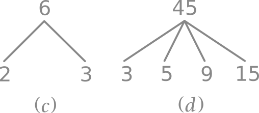
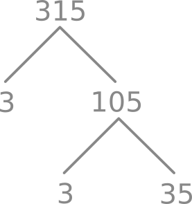
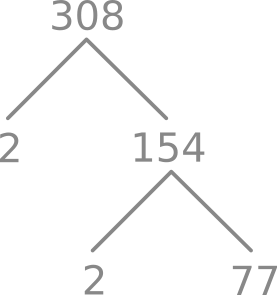
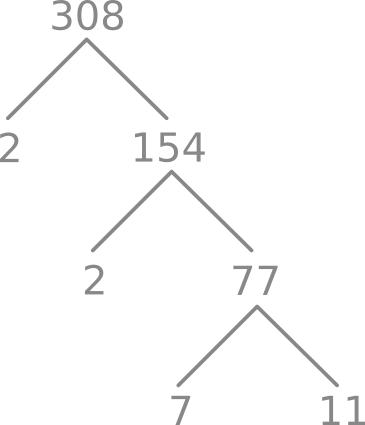
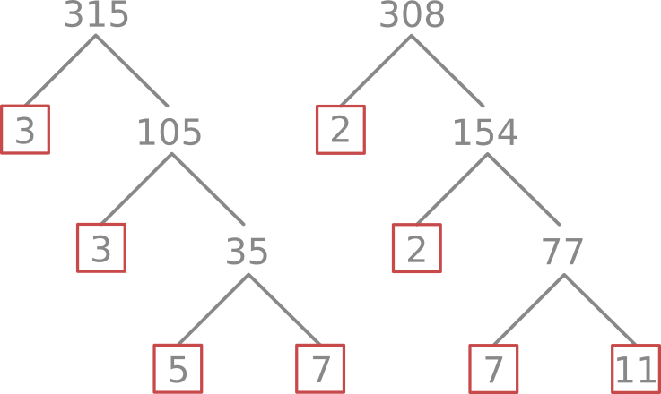
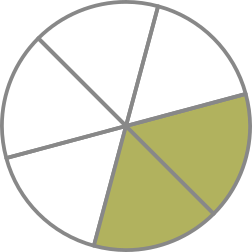

Intro
Tentang Buku Ini
Ini adalah buku tentang Pra-Aljabar yang saya tulis. Buku ini ditulis dengan asumsi anda sebelumnya telah meng-grasp matematika yang diajarkan semasa SD, karena tujuan buku ini ditulis adalah sebagai bahan untuk matrikulasi/refresher. Buku ini merangkum semua konsep yang ada di dalam Pra-Aljabar, namun tidak dilengkapi dengan problem yang bisa dijadikan acuan untuk latihan (meskipun ada beberapa bagian di dalam tulisan ini yang saya sertakan contoh kasusnya juga). Jika anda memerlukan problem untuk latihan, anda bisa mencarinya sendiri di internet.
Karena buku ini dibuat sebagai refresher, maka goals buku ini adalah membantu memahamkan/menguatkan/mempertajam konsep-konsep Pra-Aljabar yang kita miliki, yang sebelumnya telah kita dapatkan di bangku sekolah, namun agak terlupa karena satu dan lain hal.
Apabila anda menemukan typo ataupun kesalahan lainnya, anda bisa mengontak saya untuk menyampaikan koreksi melalui ariandylinux@gmail.com
Lisensi

Pra-Aljabar oleh Ariandy/1kb. Ciptaan disebarluaskan di bawah Lisensi Creative Commons Atribusi-NonKomersial-BerbagiSerupa 4.0 Internasional.
Tentang Penulis
Hai, Saya adalah Ariandy/1kb. Itu saja. :D
Lainnya
Tentang Progress Penulisan
Progress -> 59%.
Anda juga bisa melihatnya pada angka yang tertera pada titel buku ini.
Tentang Pemeriksaan Typo
Jika anda ingin memeriksa apakah ada typo atau tidak pada tulisan-tulisan ini, alih-alih memeriksanya secara keseluruhan, anda bisa langsung melihat dan memeriksa setiap kata (lebih tepatnya "string") unik yang terdapat pada tulisan ini 🔗di sini. Meskipun list kata ini masih ada sedikit bagian yang belum sepenuhnya rapi dan juga unik (karena ada kata yang tercampur dengan karakter non-alfabetik), namun setidaknya ini cukup untuk menghemat waktu bagi siapapun yang berminat untuk melakukan pemeriksaan typo. Jadi, jika ingin memeriksa typonya, cukup lihat di list itu saja. Dan jika menemukan typo, jangan ragu untuk mengabarkannya melalui ariandylinux@gmail.com
Masih mengenai pemeriksaan typo, di beberapa link (yang ditulis menggunakan markdown), anda akan melihat simbol "🔗". Simbol tersebut saya bubuhkan sebagai jalan tengah agar tidak terjadi konflik antara markdown linter dan typo-checker, mengingat pada penulisan link markdown tidak diperbolehkan ada spasi setelah adanya '['.
Tentang Ilustrasi
Ilustrasi di buku ini akan terlihat dengan warna yang agak blend jika menggunakan theme seperti Light atau Rust. Contohnya,
Warna ini saya pilih dikarenakan apabila saya memilih warna hitam, maka ilustrasi tersebut tidak terlihat pada theme Coal, Navy dan Ayu.

Namun jika saya menggunakan warna putih untuk ilustrasinya, maka ilustrasi tersebut tidak terlihat pada theme Light dan Rust.
Itu sebabnya saya memilih warna abu-abu, agar ilustrasi tersebut bisa terlihat pada semua theme, meskipun menjadi agak blend dengan warna latar pada theme Light dan Ayu.
Angka & Himpunan
Angka
Di saat saya menyebut kata "angka" atau "bilangan", mungkin secara spontan anda akan memikirkan angka-angka seperti 1, 2, 3, 4, 5, dan seterusnya, yang biasa kita sebut dengan angka positif, yang mana mereka adalah angka yang lebih besar daripada 0. Atau mungkin bisa juga anda akan terpikir angka 0, 1, 2, 3, dan seterusnya.
Namun, bisa jadi juga kita tidak terpikir (secara spontan) bahwa ternyata ada angka lain seperti angka negatif (angka yang lebih kecil dari 0. Misal, -7), pecahan (misal \(\frac{43}{11}\)), desimal (misal, 0.8) atau juga bilangan akar (misal, \(\sqrt{36}\)).
Untuk mengingat ulang angka-angka tersebut, kita akan memulainya dari Bilangan Riil.
Himpunan Angka
Hampir sebagian besar angka yang anda gunakan sepanjang pelajaran matematika dari SD, SMP, bahkan SMA menggunakan bilangan riil.

Bilangan riil \((\mathbb{R})\) terbagi menjadi dua, yaitu bilangan rasional dan bilangan irasional.
Bilangan rasional \((\mathbb{Q})\) adalah bilangan yang berupa pecahan. Contohnya, \[ \frac{11}{11}, \frac{69}{96}, -\frac{6}{7}, \frac{100}{2}, ... \]
Simbol \(\mathbb{Q}\) diberikan oleh Peano (matematikawan berdarah Italia) karena bilangan rasional merupakan hasil bagi dari sebuah angka terhadap angka lainnya, yang di dalam bahasa Italia disebut dengan Quoziente.
Angka desimal yang memiliki akhir ataupun desimal yang berulang, mereka juga adalah bilangan rasional. \[ -1.75, 0.123123, 0.666, 6.9, ... \]
Bilangan bulat \((\mathbb{Z})\) atau yang biasa dikenal sebagai Integer (diambil dari bahasa Latin, yang berarti "Whole" dalam bahasa Inggris atau "Utuh" dalam bahasa Indonesia) merupakan anggota bilangan rasional yang bisa dituliskan tanpa menggunakan bentuk pecahan. Anggota himpunannya adalah angka yang sebelumnya kita pikirkan (0, 1, 2, 3, 4, ...) dan juga bilangan negatif. Sehingga, inilah anggota himpunan bilangan bulat:
\[ ..., -4, -3, -2, -1, 0, 1, 2, 3, 4, ... \]
Simbolnya dilambangkan dengan \(\mathbb{Z}\) karena kata "Angka" di dalam bahasa Jerman adalah Zahlen.
Bilangan cacah \((\mathbb{N^0})\) adalah anggota bilangan bulat tanpa bilangan negatif (bilangan 0 dan bilangan positif). Sehingga inilah anggotanya:
\[ 0, 1, 2, 3, 4, ... \]
Sebenarnya, bilangan cacah di dalam bahasa Inggris adalah whole numbers dan dilambangkan dengan \(\mathbb{W}\). Namun, saya pribadi kurang menyukai penggunaannya karena penamaannya persis dengan Integer (yang artinya juga "whole" dari bahasa Latin). Oleh karenanya saya lebih suka menulisnya dengan simbol \(\mathbb{N^0}\). \(\mathbb{N}\) sendiri artinya "natural". Maka, arti dari \(\mathbb{N^0}\) adalah bilangan natural dengan nol.
Bilangan asli \((\mathbb{N^+})\) adalah anggota bilangan cacah tanpa nol (semuanya adalah angka positif). Anggotanya adalah:
\[ 1, 2, 3, 4, ... \]
Terkadang bilangan asli menggunakan simbol \(\mathbb{N}\) saja, karena ia disebut sebagai bilangan natural (meskipun saya pribadi lebih suka menggunakan simbol \(\mathbb{N^+}\)). Disebut natural karena ia adalah bilangan yang secara natural kita pahami saat pertama kali kita mempelajari angka-angka saat kita masih kecil/menginjak SD/mulai belajar berhitung. Itu sebabnya pula terkadang ia disebut sebagai "counting numbers" dalam bahasa Inggris.
Di luar sana, di saat kita menyebut bilangan asli/natural \((\mathbb{N})\), maka akan ada dua versi. Versi pertama, yaitu bilangan natural tanpa 0. Dan yang kedua, bilangan natural dengan 0. Versi pertama biasanya digunakan oleh matematikawan pada umumnya. Sedangkan matematikawan dari cabang lainnya (misalnya, Set Theorist) dan juga Logician menggunakan versi yang kedua. Inilah sebabnya mengapa saya pribadi lebih suka menggunakan \(\mathbb{N}^0\) untuk menggantikan \(\mathbb{W}\) dan menggunakan \(\mathbb{N}^+\) untuk menggantikan \(\mathbb{N}\).
Bilangan irasional \((\mathbb{R-Q})\) adalah semua bilangan riil \((\mathbb{R})\) yang tidak bisa dituliskan dalam bentuk pecahan. JIka kita mengubahnya ke desimal, ia akan berlanjut tanpa henti. Contoh dari bilangan irasional adalah \(\pi\) dan \(\sqrt(2)\).
\[ \pi = 3.141592653589793238462643383279502884197169399375105820974... \] \[ \sqrt{2} = 1.414213562373095048801688724209698078569671875376948073176... \]
Bilangan irasional disimbolkan sebagai \(\mathbb{R-Q}\) karena anggotanya adalah semua anggota dari himpunan \(\mathbb{R}\) yang bukan anggota dari himpunan \(\mathbb{Q}\).
Notasi Himpunan
Di atas, kita telah membicarakan tentang himpunan angka. Namun kita juga bisa membuat himpunan lain selain himpunan angka. Contohnya, kita bisa mendeskripsikan Himpunan Binatang seperti berikut.
\[ Binatang = \{ Ayam, Beruang, Cicak, Domba, Elang \} \]
atau juga mendeskripsikan Himpunan nama-nama negara anggota ASEAN.
\[ Negara Anggota ASEAN = \{ Indonesia, Malaysia, Brunei, Thailand \} \]
Kita umumnya menggunakan kurung kurawal untuk "mengurung" anggota-anggota dari sebuah himpunan. Jadinya, dengan menggunakan simbol yang kita pelajari pada himpunan angka, kita pun dapat menulis semua bilangan asli menggunakan notasi himpunan dengan cara sebagai berikut.
\[\mathbb{N^+} = \{ 1, 2, 3, 4, 5, 6, 7, ... \} \]
Identitas
Identitas adalah angka yang tidak mengubah "identitas" dari nilai asalnya.
Identitas untuk penjumlahan adalah 0.
Dan identitas untuk perkalian adalah 1.
Alasannya adalah,
Anda bisa menambahkan 0 dengan angka apapun dan ia tidak mengubah nilai asalnya/originnya.
Anda bisa mengalikan 1 dengan angka apapun dan ia tidak mengubah nilai asalnya/originnya.
Contoh
Berapa \(43+0\) ?
Tanpa memikirkan konsep tentang identitas, kita sudah tahu bahwa \(43+0=43\). Karena jika anda memiliki 43 dan anda tidak menambahkan apapun (atau menambahkan nol), kita tetap mendapatkan 43.
Jika kita berpikir tentang identitas ini secara lebih teknis, kita tahu bahwa 0 adalah identitas dalam penjumlahan. Nah, karena kita melakukan penjumlahan dengan angka 0, dan karena 0 adalah identitas dalam penjumlahan, maka kita pun tahu bahwa menjumlahkan 0 dan 43 tidak mengubah identitas dari 43. Sehingga \(43+0\) hasilnya adalah 43.
Berapa \(69\times1\) ?
Tentu saja tanpa mengetahui konsep tentang identitas, kita tahu hasilnya adalah 69. Namun, konsep tentang identitas ini mengonfirmasi bahwa hal ini benar. Kita telah tahu bahwa 1 adalah identitas untuk perkalian. Karena kita mengalikannya dengan 1, dan karena 1 adalah identitas dari perkalian, maka kita mengetahui bahwa mengalikan 69 dan 1 tidak akan merubah identitas dari 69. Sehingga \(69\times1\) akan menghasilkan 69.
Dengan penjelasan dan contoh di atas, kita bisa mengetahui bahwa,
Invers Aditif
Di saat kita berbicara tentang invers aditif, kita sebenarnya berbicara tentang versi positif dan versi negatif dari sebuah angka. Singkatnya, invers aditif adalah lawan dari sebuah angka. Anda juga bisa menyebut konsep ini dengan sebutan "perubahan tanda bilangan", atau juga "negasi". Atau kalau ingin menggunakan definisi yang agak lebih baku, ia adalah bilangan yang jika ditambahkan ke suatu variabel \(x\), maka ia akan menghasilkan angka 0 (identitas penjumlahan). Atau bisa dituliskan seperti berikut,
\[ Bilangan + x = 0 \]
Masih terdengar sulit?
Okay. Sebelum kita bahas tentang angka yang berlawanan, agar lebih mudah, kita mundur sejenak dan kembali ke bilangan negatif. Cara termudah untuk mengilustrasikan bilangan negatif adalah dengan menggunakan garis bilangan.

Pada garis bilangan ini, kita bisa melihat bahwa angka 0 ada di tengah. Angka-angka yang berada pada sebelah kanan 0 adalah bilangan positif. Sedangkan yang berada pada sebelah kiri dari angka 0 adalah negatif.
Hal penting lainnya yang bisa kita lihat dari garis bilangan ini adalah angka 1 dan -1 memiliki jarak yang sama dari 0. Bisa kita katakan bahwa 1 dan juga -1 memiliki jarak "satu unit" dari 0. Serupa pula dengan 5 dan juga -5, keduanya memiliki jarak yang sama dari 0. Keduanya memiliki jarak "lima unit" dari 0
Jika kata "unit" terdengar asing, anda bisa menggantinya dengan kata "satuan". Terkadang, di telinga beberapa orang, kata satuan terdengar aneh, misalnya di saat saya menyebut "satu satuan". Untuk mencegah kerancuan ini, maka saya menggunakan kata "unit".
Unit/Satuan sendiri bisa diubah satuannya. Misal, barang berwujud fisik yang hampir mirip dengan garis bilangan ini adalah penggaris. Penggaris umumnya memiliki satuan sentimeter (cm). Atau di saat kita sedang mengukur luas rumah, biasanya kita menggunakan satuan meter (m). Tapi berhubung pada garis bilangan di atas tidak ada satuan yang digunakan, maka kita cukup menyebutnya dengan satuan/unit (misal, "satu satuan"/"satu unit", "tiga satuan"/"tiga unit")
Kembali ke konsep tentang angka yang berlawanan. Angka yang berlawanan ini adalah angka yang memiliki jarak yang sama dari 0. Dan oleh karena itu, 1 dan -1 adalah angka yang berlawanan (karena keduanya memiliki jarak yang sama dari 0). Begitu pula dengan 5 dan -5, ia adalah invers aditif, karena memiliki jarak yang sama dari 0, yaitu lima unit.
Tentu saja 9 dan 11 bukan invers aditif. Karena jaraknya berbeda. Dua buah angka bukanlah invers aditif jika jaraknya dari 0 ternyata berbeda atau memiliki arah yang sama (dua angka tersebut sama-sama positif atau sama-sama negatif).
Hal paling mudah untuk menemukan invers aditif dari sebuah angka adalah dengan cara memberikannya tanda negatif jika angkanya positif, atau menghilangkan tanda negatif jika angkanya negatif.
Contoh
Apa invers aditif dari 11 ?
Karena 11 adalah bilangan positif, kita cukup memberikan tanda negatif, sehingga kita mendapatkan -11. 11 dan -11, keduanya memiliki jarak sebanyak sebelas unit dari 0 jika kita melihatnya dari garis bilangan. Oleh karena itu, 11 dan -11 adalah invers aditif.
Apa invers aditif dari -6 ?
Karena -6 adalah bilangan negatif, kita cukup menghilangkan tanda negatifnya, sehingga kita mendapatkan 6. -6 dan 6, keduanya memiliki jarak sebanyak sebelas unit dari 0. Oleh karena itu, -6 dan 6 adalah invers aditif.
0
Bagaimana dengan 0? Apakah 0 memiliki invers aditif? Mari kita lihat lagi garis bilangan tersebut.
Kita bisa menemukan invers aditif dengan cara mengukur jarak yang sama dari 0, namun dari arah yang berlawanan. 100 memiliki jarak sebanyak seratus unit ke kanan dari 0. Jika anda mencari invers aditifnya, maka anda perlu seratus unit ke sebelah kiri dari 0, yang mana itu adalah -100.
Namun, 0 sendiri memiliki "nol unit" dari 0 (hanya angka 0 yang memiliki jarak nol unit dari 0). Ini dikarenakan 0 bukanlah bilangan positif ataupun negatif. Sehingga kebalikan dari 0 adalah 0. Atau dengan kata lain, kebalikan dari 0 adalah dirinya sendiri.
Pengurangan (Kasus Spesifik) & Negatif Berganda
Karena ini adalah materi refresher, jadi saya tidak perlu membahas tentang penjumlahan. Namun saya ingin masuk agak dalam ke konsep pengurangan.
Ada beberapa orang di luar sana sewaktu masih SD, yang terkadang "terpeleset" (termasuk saya xD) sewaktu bertemu operasi seperti,
\[3+(-5)\]
Dan juga,
\[3-(-5)\]
Pada kasus pertama, 3+(-5), guru kita biasanya memberikan trik dengan berkata, "Kalau bertemu yang seperti ini, hilangkan saja tanda tambahnya."
Sedangkan pada kasus kedua, 3-(-5), guru kita memberikan trik dengan berkata, "Kalau ada dua buah minus, hilangkan minus-minus itu dan langsung tambahkan saja."
Meskipun kita tahu trik-trik tersebut, tapi mungkin beberapa dari kita kurang memahami mengapa trik tersebut bekerja.
Untuk memahaminya, ikuti penjelasan di bawah.
Bentuk lain dari pengurangan
Nah, jika dilihat dari formatnya, penjumlahan adalah menambahkan angka ke-1 (kita simbolkan dengan \(x\)) dan angka ke-2 (dengan simbol \(y\))
\[x+y\]
Sedangkan pengurangan adalah mengurangi angka ke-1 dengan angka ke-2.
\[x-y\]
Sadar atau tidak, di saat kita sedang melakukan pengurangan, sebenarnya kita sedang melakukan penjumlahan. Lebih tepatnya, pengurangan merupakan penjumlahan terhadap angka ke-2 yang diubah menjadi invers aditifnya (definisi #1).
\[3-5=3+(-5)\]
Kita bisa lihat bahwa kita melakukan pengurangan dengan 5. Padahal sebenarnya kita sedang melakukan penjumlahan dengan -5. Dan hasilnya adalah -2.
Dengan melihat bentuk lain tersebut, kita pun bisa membuat definisi lain: pengurangan merupakan penjumlahan terhadap angka ke-2 yang telah disertakan tanda negatif (definisi #2). Kedua definisi ini akan mendapatkan hasil yang sama, namun dengan cara yang berbeda. Mari kita gunakan definisi yang pertama terlebih dahulu.
Pengurangan terhadap angka ke-2 yang negatif (Definisi #1)
Tadi, kita melakukan pengurangan terhadap angka ke-2 yang positif. Bagaimana kalau kita melakukan pengurangan pada angka ke-2 yang negatif?
\[3-(-5)\]
Mengikuti definisi #1, pengurangannya menjadi penjumlahan, dan invers aditif dari angka ke-2 (-5) adalah 5. Maka,
\[3-(-5)=3+5\]
Dan hasilnya adalah 8.
Menggunakan Definisi #2
Okay. Di definisi #2, dikatakan bahwa pengurangan merupakan penjumlahan terhadap angka ke-2 yang telah disertakan tanda negatif. Sehingga,
\[3-(-5)=3+(-(-5))\]
Di atas, kita menambahkan sepasang kurung untuk memudahkan kita membacanya. Namun, jika anda lebih suka membuatnya terlihat lebih sederhana, kita bisa menghilangkan satu pasang kurung pada pada ruas kanan.
\[3-(-5)=3+(--5)\]
Voila! Dan kita mendapatkan double negative, atau dalam bahasa Indonesia adalah "negatif berganda". Nah, jika kita menemukan negatif berganda. Kita bisa langsung menghilangkannya.
\[--5=5\]
Sehingga,
\[3-(-5)=3+(5)\]
Atau,
\[3-(-5)=3+5\]
Dan hasilnya adalah 8.
Nah, sebenarnya kalau kita mengikuti-apa-kata-guru-kita™ dan melihat aturan negatif berganda, kita tidak perlu memecah operasinya menjadi seperti operasi di ruas kanan. Cukup hilangkan "minus-minus" tersebut (yang ada di ruas kiri), dan ubah menjadi tanda "plus". Namun, terkadang saya melihat beberapa murid kritis, di saat mereka menemukan kasus seperti \(3-(-5)\), mereka tidak puas dengan jawaban guru yang "tiba-tiba" melakukan pertukaran dua buah minus tersebut menjadi satu buah plus. Sebagian dari mereka lagi, akan langsung mencoba melakukan penghapusan terhadap "minus-minus" tersebut (mengaplikasikan aturan negatif berganda) dan mendapatkan angka 35. Kemudian bertanya-tanya darimana tanda plus tersebut hadir. xD
Untuk itulah saya menuliskan hal ini.
Penjumlahan & Pengurangan Pada Bilangan Bertanda
Apa itu Bilangan bertanda?
Izinkan saya untuk sedikit mengulang materi sebelumnya. Kita tahu bahwa angka negatif memiliki tanda "-" (misal -1, -2, -3, dst). Nah, sebenarnya, angka positif pun memiliki tanda "+". Namun kita sering tidak menuliskan tanda "+" di depan angka positif, agar angka tersebut terlihat sederhana. Jadi, kita tak perlu menuliskan +1, +2, +3, +4, dst. Cukup dengan 1, 2, 3, 4, 5, dst. Sehingga, 11, 69, 100 adalah "angka bertanda positif". Dan -7, -43, -99 adalah "angka bertanda negatif". Kita cukup menyebutnya "angka positif" dan "angka negatif" tanpa perlu menambahkan kata "bertanda" di tengahnya. Jadi, singkatnya bilangan bertanda adalah bilangan positif dan negatif.
Di saat kita melakukan penjumlahan dan pengurangan pada angka bertanda, kita memiliki tiga kombinasi yang memungkinkan dari dua angka bertanda yang akan kita jumlahkan/kurangkan.
- Keduanya adalah angka positif
- Keduanya adalah angka negatif
- Satu angka positif dan yang satunya lagi adalah angka negatif
Mari kita lakukan penjumlahan terhadap tiga kombinasi tersebut.
Positif + Positif = Positif. Contohnya,
Negatif + Negatif = Negatif. Cheatnya, anggap saja keduanya adalah angka positif, lalu jumlahkan keduanya. Dan tambahkan tanda negatif pada hasilnya. Juga, pada pembahasan sebelumnya, kita bisa mengubahnya menjadi Negatif - Positif. Contohnya,
Positif + Negatif dan Negatif + Positif. Di saat kita menjumlahkan satu angka positif dan satu angka negatif, hasilnya akan positif jika angka positifnya lebih besar. Namun, hasilnya akan negatif jika angka negatifnya lebih besar.
"Besar" yang dimaksud di sini artinya adalah memiliki jarak yang lebih jauh dari 0 jika digambarkan pada garis bilangan.
Karena di saat kita bertanya "Yang mana yang lebih besar antara 1 dan -9 ?", beberapa orang akan menjawab bahwa 1 lebih besar daripada -9, yang mana jawaban tersebut tidaklah salah. Namun, karena konteks "besar" yang dimaksud disini adalah "yang jaraknya lebih jauh dari 0", oleh karenanya, -9 yang lebih besar.
Cheat untuk kasus ini adalah anggap saja kedua bilangan tersebut adalah positif. Lalu kurangkan angka yang besar ke angka yang kecil. Lalu tanda pada hasilnya menyesuaikan mengikuti tanda pada angka yang besar. Contohnya,
\[6+(-9)\]
Mengikuti cheat tersebut, yang terbesar adalah -9. Maka 9-6, dan hasilnya adalah 3. Karena tanda pada hasilnya mengikuti tanda dari angka yang terbesar (-9, yang mana adalah angka negatif), maka hasilnya adalah -3.
Contoh lainnya adalah,
\[8+(-2)\]
Yang terbesar adalah 8. Maka 8-2, dan hasilnya adalah 6. Karena angka terbesarnya adalah 8 (yang mana adalah positif). Maka hasilnya adalah 6.
Jika angka positif dan angka negatifnya berlawanan, maka hasilnya adalah 0.
Sekarang kita lakukan operasi pengurangan pada kombinasi-kombinasi tersebut.
Positif - Positif. Hasilnya akan positif apabila angka ke-1 lebih besar. Namun menghasilkan negatif jika angka ke-2 lebih besar. Dan seperti yang kita tulis pada bagian sebelumnya, bahwa pengurangan itu adalah menjumlahkan dengan mengubah angka ke-2 menjadi invers aditifnya. Contohnya,
\[2-6=2+(-6)=-4\]
Angka ke-1 adalah 2. Dan angka ke-2 adalah -6. Karena -6 (angka ke-2) lebih jauh dari 0 daripada 2, maka hasilnya adalah negatif.
\[45-2=45+(-2)=43\]
Angka ke-1 adalah 45. Dan angka ke-2 adalah -2. Karena 45 (angka ke-1) lebih jauh dari 0 daripada -2, maka hasilnya adalah positif.
Jika kedua angka positif tersebut adalah equal/sama, maka hasilnya adalah 0.
\[10-10=0\]
Negatif - Negatif. Kebalikan dari "Positif - Positif", hasilnya akan negatif apabila angka ke-1 lebih besar, namun menghasilkan positif jika angka ke-2 lebih besar.
\[-6-(-8)=-6+8=2\]
Angka ke-1 adalah -6. Dan angka ke-2 adalah -8. Karena angka ke-2 (-8) lebih besar daripada angka ke-1. Maka hasilnya adalah positif.
\[-13-(-2)=-13+2=-11\]
Angka ke-1 adalah -13. Dan angka ke-2 adalah -2. Karena angka ke-1 (-13) lebih besar daripada angka ke-2. Maka hasilnya adalah negatif.
Jika kedua angka negatif itu adalah sama, maka hasilnya adalah 0.
\[-11-(-11)=-11+11=0\]
Positif - Negatif = Positif.
Negatif - Positif = Negatif.
Rangkuman
| Positif + Positif | Positif |
| Negatif + Negatif | Negatif |
| Positif + Negatif | Positif, jika angka positifnya lebih besar |
| Negatif, jika angka negatifnya lebih besar | |
| 0, jika kedua angkanya adalah invers aditif | |
| Negatif + Positif | Positif, jika angka positifnya lebih besar |
| Negatif, jika angka negatifnya lebih besar | |
| 0, jika kedua angkanya adalah invers aditif | |
| Positif - Positif | Positif, jika angka ke-1 lebih besar |
| Negatif, jika angka ke-2 lebih besar | |
| 0, jika angkanya sama | |
| Negatif - Negatif | Positif, jika angka ke-2 lebih besar |
| Negatif, jika angka ke-1 lebih besar | |
| 0, jika angkanya sama | |
| Positif - Negatif | Positif |
| Negatif - Positif | Negatif |
Sifat Komutatif
Di saat kita melakukan penjumlahan, tidak akan ada masalah jika kita menukar letak kedua angkanya.
Sifat "bisa menukar letak" ini adalah sifat komutatif. Sifat komutatif ini tidak berlaku pada pengurangan. Menukar letaknya akan memberikan hasil yang berbeda.
Perkalian Pada Bilangan Bertanda
Sama seperti sebelumnya, saat melakukan perkalian, kita akan mendapati 3 kombinasi.
- Dua-duanya positif
- Dua-duanya negatif
- Yang satu positif dan yang satunya lagi negatif
Mari kita bahas bagaimana hasil dari setiap kombinasi tersebut.
Saat kita mengalikan dua buah angka positif, hasilnya akan selalu positif.
Di saat kita mengalikan 2 buah angka negatif, hasilnya akan selalu positif.
Di saat salah satunya negatif dan lainnya positif, maka hasilnya negatif.
Dengan kata lain, jika kita melakukan perkalian pada angka yang bertanda sama, maka hasilnya positif. Jika perkalian dilakukan dengan dua angka yang tandanya berbeda, maka hasilnya negatif.
Jangan lupa pula, jika ada 0 dalam perkalian tersebut, maka hasilnya adalah 0. Apapun yang dikalikan dengan 0, maka hasilnya adalah 0.
Berikut ini adalah rangkumannya.
| Positif \(\times\) Positif | Positif |
| Negatif \(\times\) Negatif | Positif |
| Positif \(\times\) Negatif | Negatif |
| Negatif \(\times\) Positif | Negatif |
| (Apapun tandanya) \(\times\) 0 | 0 |
| 0 \(\times\) (Apapun tandanya) | 0 |
Ah ya, sifat komutatif berlaku di perkalian. Anda bisa mencoba mengganti angkanya dan menukar letaknya. \[4\times3=12=3\times4\]
Cara Penulisan
Sejauh ini kita menggunakan tanda \(\times\) untuk melakukan perkalian. Semakin dalam anda mempelajari matematika, anda nantinya akan menggunakan tanda titik, menggantikan tanda silang. Jadi anda tidak perlu bingung apabila anda nantinya menemukan tanda titik seperti \(2\cdot3\). Itu sama seperti \(2\times3\).
Perhatikan baik-baik, jangan sampai anda mengira itu tanda titik untuk bilangan desimal. Titiknya diletakkan lebih tinggi daripada di saat menuliskan titik untuk penulisan desimal. Penggunaan titik ini diperlukan karena di saat anda mulai masuk ke tahap aljabar, tanda \(\times\) lebih riskan tertukar dengan variabel \(x\) (terlebih jika anda menuliskannya dengan tulisan tangan).
Perhatikan juga tentang penulisan. Di saat anda melakukan perkalian dengan angka negatif (terlebih angka negatif tersebut adalah angka ke-2), disarankan untuk menggunakan tanda kurung agar lebih mudah dibaca. Meskipun begitu, semua cara tulis di bawah ini semuanya diperbolehkan.
Dan, anda pun tidak perlu kaget jika menemukan penulisan seperti ini, \(3(5)\). Itupun juga adalah perkalian. Cara tulis perkalian yang hanya menggunakan tanda kurung inipun diperbolehkan. Anda juga boleh menggunakan tanda kurung tersebut di kedua angkanya, misal \((3)(5)\). Jika anda hanya ingin menggunakan 1 tanda kurung, letakkan tanda kurung itu pada angka ke-2. Berikut adalah contoh untuk menggunakan tanda kurung pada perkalian.
Perkalian Berulang
Sebagai tambahan, apabila anda menemukan kasus perkalian berulang seperti ini,
\[(2)(2)(-2)(-2)(1)(1)\] \[(2)(2)(-2)(-2)(1)(-1)\]
Kalau dari perkalian tersebut pertanyaannya adalah "Apakah hasilnya positif atau negatif?", kita bisa dengan mudah mengetahui hasilnya. Yang perlu kita lakukan adalah menghitung berapa banyak angka negatifnya, apakah banyaknya tersebut ganjil atau genap. Jika genap, maka hasilnya positif. Jika ganjil, maka hasilnya negatif.
Pada kasus pertama, angka negatifnya ada dua buah. Maka hasilnya adalah positif. Pada kasus kedua, angka negatifnya ada tiga buah. Maka hasilnya adalah negatif.
Pembagian Pada Bilangan Bertanda
Masih seperti sebelumnya, kita memiliki 3 kombinasi. Namun sekarang kita melakukan pembagian.
Di saat kita melakukan pembagian terhadap sesama positif, maka hasilnya akan positif. \[35\div7=5\]
Di saat kita melakukan pembagian terhadap sesama negatif, maka hasilnya akan positif. \[(-35)\div(-7)=5\]
Di saat salah satunya positif (dan yang lain adalah negatif), maka hasilnya adalah negatif.
\[35\div(-7)=-5\] \[(-35)\div7=-5\]
Bagaimana dengan 0?
Di saat 0 dibagikan dengan angka apapun, hasilnya adalah 0.
Analogi awamnya adalah seperti ini, anggap saja ada 5 pemancing yang memancing bersamaan. Mereka membuat semacam aturan, bahwa berapa ekor ikan pun yang mereka dapatkan nantinya akan ditotalkan dan dibagi rata menjadi 5. Di hari pertama memancing, nasib mereka mujur. Total mereka mendapatkan 100 ikan. Artinya, berdasarkan aturan yang mereka buat, masing-masing mendapatkan 20. Karena \(100\div5=20\). Tapi di hari ke-2, mereka semua tidak mendapatkan apapun. Karena memang tidak mendapatkan apapun, artinya tidak ada ikan yang bisa mereka bagi. \(0\div5=0\). Masing-masing pulang dengan tangan kosong.
Kita tidak bisa membagikan angka apapun dengan 0, karena ia akan menjadi "tak terdefinisi". Penjelasan tentang ini akan dibahas pada bagian selanjutnya.
Sehingga, sejauh ini kita bisa merangkum,
| Positif \(\div\) Positif | Positif |
| Negatif \(\div\) Negatif | Positif |
| Positif \(\div\) Negatif | Negatif |
| Negatif \(\div\) Positif | Negatif |
| 0 \(\div\) (Apapun tandanya) | 0 |
| (Apapun tandanya) \(\div\) 0 | Tak terdefinisi |
Cara Penulisan
Sedari tadi, kita menuliskan pembagian dalam bentuk horizontal/mendatar menggunakan simbol pembagian (\(\div\)). Kita juga bisa menuliskannya dalam bentuk vertikal, atau yang biasa kita sebut sebagai pecahan.
\[12\div3=\frac{12}{3}=4\]
Mengubah pembagian dalam bentuk horizontal ke dalam bentuk pecahan ini akan dijelaskan pada sub-bab selanjutnya.
Sangat, sangat dan sangat disarankan menggunakan tanda kurung untuk angka negatif di saat menuliskan pembagian. Anda bisa melakukannya pada bentuk horizontal ataupun vertikal, namun tanda kurung ini benar-benar sangat berguna saat kita menuliskan pembagian tersebut dalam bentuk horizontal.
Seringkali, kita tidak perlu menggunakan tanda kurung pada angka positif saat melakukan pembagian. Karena terkadang menggunakan tanda kurung pada angka positif saat pembagian justru mempersulit untuk membacanya. Namun boleh-boleh saja jika Anda ingin melakukannya.
Pembagian Berulang
Sama seperti perkalian, apabila anda menemukan kasus pembagian berulang seperti ini,
\[2\div2\div(-2)\div(-2)\div1\div1\] \[2\div2\div(-2)\div(-2)\div1\div(-1)\]
Dan pertanyaannya sama seperti sebelumnya, yaitu "Apakah hasilnya positif atau negatif?", maka lakukan hal yang sama seperti yang kita lakukan di perkalian berulang. Hitung berapa banyak angka negatifnya, apakah banyaknya tersebut ganjil atau genap. Jika genap, maka hasilnya positif. Jika ganjil, maka hasilnya negatif.
Di kasus pertama, angka negatifnya ada dua buah. Maka hasilnya adalah positif. Sedangkan di kasus kedua, angka negatifnya ada tiga buah. Maka hasilnya adalah negatif.
Invers Multiplikatif, Tak Terdefinisi & Bentuk Lain Dari Pembagian
Invers Multiplikatif
Mari kita tuliskan lagi definisi Invers Aditif yang kita bahas di bagian sebelumnya.
Invers Aditif adalah bilangan yang jika ditambahkan ke suatu variabel \(x\), maka ia akan menghasilkan angka 0 (identitas penjumlahan).
Sekarang, kita pinjam definisinya dan mengubahnya sedikit untuk membuat definisi Inverse Multiplikatif,
Invers Multiplikatif adalah bilangan yang jika dikalikan ke suatu variabel \(x\), maka ia akan menghasilkan angka 1 (identitas perkalian).
Contohnya adalah seperti berikut.
Berapa invers multiplikatif dari 9? Untuk menjawab ini, tentunya kita harus mencari angka berapa yang apabila dikalikan dengan 9, maka ia akan menjadi 1. Maka jawabannya adalah \(\frac{1}{9}\). Karena,
\[9\cdot\frac{1}{9}=1\]
Dengan ini, kita mengetahui bahwa invers multiplikatif dari 9 adalah \(\frac{1}{9}\). Sebaliknya, invers multiplikatif dari \(\frac{1}{9}\) adalah 9.
Ah ya, anda nantinya akan jarang mendengar istilah invers multiplikatif ini. Ini adalah hal yang wajar karena ia lebih populer disebut sebagai "resiprok". Jadi anda tidak perlu bingung dengan invers multiplikatif dan resiprok. Keduanya adalah hal yang sama.
Pembagian dengan 0 dan Tak terdefinisi
Sekarang, kita ubah pertanyaannya.
Berapa invers multiplikatif dari 0?
\[0\times?=1\]
Nah, dengan invers multiplikatif, kita mengetahui bahwa,
\[10\times\frac{1}{10}=1\] \[\vdots\] \[4\times\frac{1}{4}=1\] \[3\times\frac{1}{3}=1\] \[2\times\frac{1}{2}=1\] \[1\times1=1\]
Bagaimana dengan,
\[0\times\frac{1}{0}\]
Tentu saja kita akan gagal mendapatkan 1. Karena apapun yang dikalikan dengan 0 akan menghasilkan 0. Atau dengan kata lain, 0 tidak memiliki invers multiplikatif.
Itu sebabnya kita tidak bisa melakukan pembagian dengan 0, karena akan menjadi tak terdefinisi.
Bentuk Lain Dari Pembagian (Pembagian Ke Pecahan)
Di bagian tentang pengurangan, ada definisi,
Pengurangan merupakan penjumlahan terhadap angka ke-2 yang diubah menjadi invers aditifnya
Sebenarnya hal serupa juga terjadi di pembagian. Definisinya adalah,
Pembagian merupakan perkalian terhadap angka ke-2 yang diubah menjadi invers multiplikatifnya
Contohnya adalah seperti ini.
Misal, kita ingin melakukan pembagian seperti berikut.
\[10\div10\]
Angka ke-2 adalah 10 dan invers multiplikatifnya adalah \(\frac{1}{10}\). Maka kita bisa mengubah bentuknya menjadi,
\[10\div10=10\times\frac{1}{10}\]
Hal ini juga menjelaskan mengapa kita bisa mengubah formatnya, dari pembagian horizontal ke pembagian vertikal (pecahan).
Pada contoh di sub-bab sebelumnya, kita melakukan,
\[12\div3\]
Nah, sebenarnya saat kita membagikan 12 dengan 3, kita melakukan perkalian antara 12 dengan invers multiplikatif dari 3, yaitu \(\frac{1}{3}\). Sehingga,
\[12\div3=12\times\frac{1}{3}\]
Maka,
\[12\div3=12\times\frac{1}{3}=\frac{12}{3}\]
Itulah penjelasan mengapa kita bisa mengubah pembagian berformat horizontal ke dalam bentuk pecahan.
Konsep ini merupakan fondasi utama di saat melakukan pembagian dengan antar sesama pecahan. Untuk sementara, cukup pahami ini dengan baik. Pengaplikasiannya dalam pembagian antar pecahan akan dibahas pada bab lain.
Nilai Absolut
Nilai absolut (atau terkadang dinamai juga sebagai "nilai mutlak") bisa diartikan sebagai "seberapa jauh jarak suatu angka dari 0".
Untuk lebih mudahnya, kita kembali melihat pada garis bilangan.
Kita bisa mengatakan bahwa 3 berada di jarak tiga unit dari 0. Begitu juga -3 yang merupakan lawan dari 3, ia pun berjarak tiga unit dari 0. Sehingga, keduanya (3 dan -3) memiliki jarak tiga unit dari 0.
1 berjarak satu unit dari 0, dan -4 memiliki jarak 4 unit dari 0.
Jadinya, di saat kita mengubah angka positif dan negatif menjadi seberapa jauh jarak mereka dari 0, maka kita mendapatkan,
| Angka | Jarak dari 0 |
|---|---|
| 3 | 3 |
| -3 | 3 |
| -4 | 4 |
| 5 | 5 |
Yang menarik adalah semua angka (entah ia positif atau negatif), akan menjadi positif jika kita ingin mengetahui jaraknya dari 0.
Jadi, seperti inilah nilai absolut. Ia akan mengubah setiap angka menjadi seberapa jauh jaraknya dari originnya (titik asal, yaitu 0). Atau singkatnya, mengubah semua angka positif dan negatif menjadi hanya angka positif. Ia pun mengubah 0 menjadi 0, karena 0 memiliki jarak sejauh nol unit dari dirinya sendiri.
Untuk merepresentasikan nilai absolut ini ke dalam sebuah simbol, kita akan menggunakan simbol "|". Simbol tersebut biasanya disebut dengan "vertical bar", atau jika anda adalah programmer di beberapa bahasa pemrograman tertentu, anda akan mengenalnya dengan nama "pipe". Di sini kita akan menggunakannya sebagai tanda kurung dan menyebutnya dengan "kurung absolut". Cara menggunakan simbol ini adalah dengan cara mengurung angka yang ingin diubah menjadi nilai absolut dengan simbol ini. Contohnya,
\[|-8|\]
\(|-8|\) artinya adalah "ambil nilai absolut dari -8". Kita telah mengetahui bahwa nilai absolut dari -8 adalah 8. Karena -8 berjarak delapan unit dari 0. Berikut ini adalah contoh lainnya.
Kita tidak hanya bisa mengambil nilai absolut dari sebuah angka, namun juga kita bisa mengambil nilai absolut dari ekspresi matematika (misalnya, ekspresi untuk operasi penjumlahan, pengurangan, perkalian, pembagian, ataupun ekspresi matematika yang memiliki dua buah atau lebih operasi), dan kita "kurung" ekspresi tersebut dengan menggunakan kurung absolut. Dan tentu saja, apapun ekspresi di dalam kurung absolut tersebut akan menghasilkan positif (kecuali nilai dari ekspresinya adalah 0, yang mana artinya adalah nilai absolutnya bernilai 0).
Hal penting lainnya adalah, kita harus kerjakan terlebih dahulu ekspresi yang ada di dalam kurung absolut sebelum mengambil nilai absolutnya. Sebagai contoh,
\[|-2-43|\]
Anda mungkin saja berpikir untuk menghilangkan tanda negatif yang ada di depan 2, dan berujung dengan mendapatkan -41 sebagai hasilnya.
\[|-2-43|\] \[2-43\] \[-41\]
Namun hal ini adalah cara yang salah, karena seharusnya kita menyelesaikan terlebih dahulu ekspresi yang ada di dalam kurung absolut dan kemudian mengambil nilai absolutnya. Seperti inilah cara yang benar untuk menyelesaikannya.
\[|-2-43|\] \[|-45|\] \[45\]
Perhatikan bagaimana kita menyelesaikan operasi pengurangan yang ada di dalam kurung absolut tersebut, yaitu dengan cara menyelesaikan -2-43 dan mendapatkan -45. Setelah kita selesai menyelesaikan/menyederhanakan ekspresinya, barulah kita mengambil nilai absolutnya.
Juga apabila anda menemukan contoh seperti ini,
\[-|100|\]
Maka kerjakan terlebih dahulu pengambilan nilai absolutnya, sehingga hasilnya adalah -100.
Catatan: Pada sub-bab ini, saya selalu menggunakan nama "nilai absolut" alih-alih menggunakan nama "nilai mutlak". Namun itu adalah preferensi kita masing-masing ingin menggunakan nama yang mana. Jika latar belakang anda adalah seorang programmer, mungkin anda lebih nyaman menyebutnya dengan "nilai absolut".
Operasi Aritmatika (Rangkuman I, Saran & Pengingat)
Sejauh ini kita telah mempelajari ulang empat buah konsep operasi aritmatika, yaitu penjumlahan, pengurangan, perkalian dan pembagian.
Pada operasi tersebut kita akan melihatnya seperti ini.
\[ x + y = z \] \[ x - y = z \] \[ x \times y = z \] \[ x \div y = z \]
Pada pembahasan sebelumnya, saya sering menggunakan kata "Angka ke-1" untuk \(x\) dan "Angka ke-2" untuk \(y\). Padahal, sebenarnya ada istilah yang lebih mudah untuk melambangkan \(x\) dan \(y\) tersebut. Saya paham benar bahwa "mudah" itu relatif. Namun saya katakan ini mudah karena pada tahap selanjutnya, istilah-istilah (dari bahasa Inggris) ini akan mempersingkat tulisan dan juga mempermudah penjelasan-penjelasan dari suatu konsep yang lebih kompleks.
Contoh, jika Anda membaca buku Pra-Aljabar yang ditulis dalam Bahasa Inggris, anda akan menemukan istilah "Product of Primes". Kata "Product" ini terkadang akan membingungkan orang awam atau orang-orang yang terkendala dengan bahasa. Padahal sebenarnya ia adalah "hasil perkalian". Juga, hasil penjumlahan di bahasa Inggris adalah Sum. Sementara di Indonesia, umumnya, apapun operasi matematikanya, entah perkalian, pembagian, penjumlahan dan pengurangan, hasilnya akan disebut sebagai "Hasil".
Di bahasa Inggris, istilah-istilah mengenai operasi aritmatika ini adalah sebagai berikut.
Salah satu istilah yang nantinya paling sering ditemui adalah "term". Term di Aljabar adalah ekspresi matematika yang tunggal. Ia bisa saja berupa suatu angka (entah positif, nol atau negatif), variabel tunggal (sebuah huruf, misalnya \( x \)), atau juga beberapa variabel yang dikalikan, namun tidak pernah ditambahkan ataupun dikurangkan (contohnya seperti \( xyz \)). Terkadang ada juga term yang berisi variabel dengan angka didepannya (misal, \( -2y \) atau \( 8ijk \)). Angka yang berada di bagian depan term tersebut biasa disebut dengan koefisien. Pada sebuah ekspresi matematika, biasanya terdapat satu, dua, tiga atau banyak term. Jika sebuah ekspresi matematika hanya memiliki satu term, maka ia disebut sebagai ekspresi monomial (atau cukup disebut dengan "monomial" saja). Jika ada dua, ia disebut binomial. Jika ada tiga, ia disebut trinomial. Dan jika ada banyak, ia disebut polinomial.
Sebenarnya, bahasa Indonesia sendiri memiliki istilah-istilah matematikanya sendiri. Namun sepertinya kurang populer. Berikut adalah versi bahasa Indonesia untuk istilah-istilah di operasi matematika.
Saran & Pengingat
Di Bab 1 ini, saya yakin beberapa orang akan terpikir seperti ini,
"Mengapa menggunakan istilah-istilah aneh untuk hal seremeh ini?"
Selain untuk memahamkan kembali konsep matematika yang kita miliki, catatan matrikulasi ini juga berupaya agar pembaca secara jangka panjang bisa mempelajari matematika secara otodidak. Terutama apabila anda mempelajarinya dari sumber-sumber berbahasa Inggris.
Tidak sedikit saya bertemu orang yang ingin me-resharp kemampuan matematikanya dari 0. Namun seketika jiper dan mundur perlahan di saat bertemu dengan istilah-istilah yang terdengar aneh bagi dirinya, misalnya "Inverse Multiplicative" yang kita bahas di bab ini, atau juga "Direct Variation" di Aljabar, atau juga "Quadrilateral" di Geometri. Padahal itu adalah hal yang sederhana yang sebelumnya sudah pernah kita pelajari di bangku sekolah.
"Inverse Multiplicative" adalah suatu bilangan yang apabila dikalikan dengan bilangan lainnya maka ia menghasilkan 1. "Direct Variation" adalah tentang mengalikan sebuah angka/variabel dengan konstanta (nilai yang tidak berubah). "Quadrilateral" adalah bangun datar yang memiliki empat sisi.
Bagaimana? Meskipun istilahnya terdengar asing, namun sebenarnya tidak membingungkan, kan?
Di akhir Bab 1 ini, saya katakan sekali lagi, sebisa mungkin pelajari juga istilah-istilah matematika di Bahasa Inggris. Nantinya ini mempermudah anda mempelajari matematika secara otodidak apabila anda ingin mempelajarinya dari sumber berbahasa Inggris.
Format Bersusun / Menurun
Sebelum berpindah ke bab selanjutnya, saya (lagi-lagi) ingin me-refresh ingatan kita, bahwa ada format lain dalam melakukan aritmatika, yaitu format bersusun. Saya tidak akan menjelaskan tentang bagaimana cara melakukan perhitungannya. Yup, saya hanya sekedar mengingatkannya saja. Alasan lainnya mengapa saya tidak menjelaskannya adalah karena sangatlah menyulitkan dan bertele-tele untuk menjelaskannya menggunakan MathJax.
Pada penjumlahan, format bersusunnya adalah seperti berikut (dalam bahasa Inggris disebut sebagai Long Addition).
Ini adalah contoh pengurangan dengan format bersusun (Long Subtraction).
Sedangkan yang di bawah ini adalah perkalian dengan format bersusun (Long Multiplication).
Atau terkadang anda melihatnya dalam bentuk seperti di bawah ini. Yaitu dengan tetap dituliskan digit 0-nya.
Adapun di bawah ini merupakan format bersusun untuk pembagian (Long Division).
Jika anda lupa ataupun tidak familiar dengan format penulisan aritmatika seperti ini, anda bisa mencarinya di Google dengan kata kunci "Penjumlahan Bersusun", "Pengurangan Bersusun", "Perkalian Bersusun", "Pembagian Bersusun".
Faktor dan Kelipatan
Di Pra-Aljabar ini, kita akan sering bertemu dengan konsep-konsep tentang bagaimana sebuah angka memiliki hubungan dengan angka lainnya. Dan jenis hubungan antar angka ini seringkali ditemukan di kehidupan nyata. Di bagian ini, kita akan membahas hal-hal yang berkaitan dengan hubungan tersebut.
Misalnya, anda ingin membeli air mineral di minimarket. Nah, di saat kita ingin membelinya, kita memiliki dua opsi, yaitu:
- Beli minuman yang kemasannya kecil. Harganya cenderung murah. Namun tergolong mahal apabila dihitung per liter.
- Beli minuman yang kemasannya besar. Harganya lumayan mahal. Namun tergolong murah apabila dihitung per liter.
Juga, sebelumnya kita telah mempelajari hubungan antara angka positif dan angka negatif. Kita tahu bahwa -11 dan 11 memiliki hubungan, yaitu mereka berdua adalah angka yang berlawanan. Nah, dengan ide yang kurang lebih sama, kita juga akan mempelajari bagaimana angka 20, 25 dan 30 berhubungan, yang mana hubungan dari tiga angka tersebut ternyata adalah sama-sama angka yang merupakan hasil kali dari 5.
\[20=4(5)\] \[25=5(5)\] \[30=6(5)\]
Konsep-konsep ini sangatlah penting, mengingat ini adalah fondasi awal untuk mempelajari konsep yang nanti dipelajari berikutnya, yaitu pecahan.
Jadi, kita awali pembahasan ini dengan konsep Keterbagian, yaitu tentang mencari angka mana yang bisa membagi sebuah bilangan lainnya dengan sama besar, dan hasil dari pembagian tersebut adalah bilangan bulat \((\mathbb{Z})\).
Keterbagian & Sisa Bagi
Keterbagian
Keterbagian adalah konsep yang umum kita temui, meskipun kita jarang mendengar istilah ini.
Apakah sebelumnya anda pernah mendengar pertanyaan seperti ini?
Apakah \(x\) bisa dibagi habis dengan \(y\)?
Nah, pertanyaan di atas itu merupakan versi panjang dari keterbagian.
Contohnya, 20 bisa dibagi dengan 4 sebanyak lima kali, karena \(20\div4=5\), yang mana artinya 20 bisa dibagi habis dengan 4.
Mari kita buat definisi yang agak ketat. 20 bisa dibagi habis dengan 4 karena di saat kita melakukan operasi \(20\div4\) kita mendapatkan 5, yang mana 5 adalah bilangan bulat \((\mathbb{Z})\). Itulah definisi dari keterbagian, yaitu "hasil dari pembagiannya haruslah bilangan bulat".
Sisa Bagi
Mari kita buat definisi lainnya. Cara lain untuk mendefinisikan keterbagian adalah di saat sisa bagi dari pembagian tersebut adalah 0. Kita seringkali berpikir bahwa 0 itu adalah "tidak ada". Kita juga sering berpikir bahwa tidak ada lagi sisa bagi apabila sisa baginya adalah 0.
Tapi apa itu sisa bagi? Berikut adalah contohnya.
Apakah 14 bisa dibagi habis dengan 3?
Jawabannya adalah tidak. Karena di saat kita membagi 14 dengan 3, kita hanya mendapatkan 4. Ini disebabkan angka terdekat di bawah 14 yang bisa dibagi 3 adalah 12. Dan ini menyisakan 2 sebagai sisa baginya (hasil dari 14-12).
Apakah 10 bisa dibagi habis dengan 9?
Tentu saja tidak. Karena sisa baginya adalah 1.
Apakah 15 bisa dibagi habis dengan 3?
Ya. Karena ia tidak memiliki sisa bagi apapun.
Itulah sebabnya kita bisa membuat definisi lain, yaitu apabila kita melakukan pembagian pada sebuah angka dengan angka lainnya dan mendapatkan 0 sebagai sisa baginya, maka ia bisa terbagi habis.
Aturan Keterbagian
Aturan Keterbagian adalah cara cepat untuk mengetahui apakah suatu angka akan habis terbagi oleh angka lainnya, namun tanpa melakukan pembagian sesungguhnya. Berikut adalah aturan keterbagian dari 1 sampai dengan 10.
| \(x\) bisa dibagi habis dengan ... | Ciri-ciri \(x\) yang bisa habis dibagikan |
|---|---|
| 1 | Tidak ada ciri-ciri apapun. Semua bilangan bulat bisa terbagi habis dengan 1 |
| 2 | Digit terakhirnya adalah angka genap |
| 3 | Jumlahkan semua digitnya. Hasilnya harus bisa dibagi habis dengan 3 |
| 4 | Dua digit terakhirnya bisa dibagi habis dengan 4 |
| 5 | Digit terakhirnya adalah 0 atau 5 |
| 6 | Digitnya bisa habis dibagi dengan 2 dan juga 3 |
| 7 | Digit terakhir dikalikan dengan 5. Lalu tambahkan dengan angka sisanya. Hasilnya harus bisa dibagi habis dengan 7 |
| 8 | Tiga digit terakhirnya bisa dibagi habis dengan 8 |
| 9 | Jumlah dari digitnya bisa dibagi habis dengan 9 |
| 10 | Digit terakhirnya adalah 0 |
Berikut adalah contohnya.
Apakah 100 bisa dibagi habis dengan 1 ?
Ya. Karena 100 adalah bilangan bulat. Dan semua bilangan bulat bisa dibagi dengan 1.
Apakah 92 bisa dibagi habis dengan 2 ?
Ya. Karena digit terakhir dari 92 adalah 2. Dan 2 adalah angka genap.
Apakah 13752 bisa dibagi habis dengan 3 ?
Ya. Jika kita menjumlahkan semua digit dari 13752, maka 1+3+7+5+2=18. Dan 18 bisa dibagi habis dengan 3.
Apakah 69616 bisa dibagi habis dengan 4 ?
Ya. Dua digit terakhir dari 69616 adalah 16. Dan 16 bisa dibagi habis dengan 4.
Apakah 11115 bisa dibagi habis dengan 5 ?
Ya. Karena digit terakhir dari 11115 adalah 5.
Apakah 3996 bisa dibagi habis dengan 6 ?
Ya. Karena,
- Ia habis dibagi dengan 2. Angka terakhir dari 3996 adalah 6. Dan 6 adalah angka genap.
- Ia habis dibagi dengan 3. Karena 3+9+9+6=27. Dan 27 bisa dibagi habis dengan 3.
Apakah 343 bisa dibagi habis dengan 7 ?
Ya. Digit terakhir dari 343 adalah 3. Maka kita kalikan 3(5)=15. Lalu angka yang tersisa adalah 34. Jumlahkan 34+15, dan hasilnya adalah 49. 49 bisa dibagi habis dengan 7.
Apakah 6969128 bisa dibagi habis dengan 8 ?
Ya. Karena 3 digit terakhirnya adalah 128. Dan 128 bisa dibagi habis dengan 8.
Apakah 3636 bisa dibagi habis dengan 9 ?
Ya. Karena 3+6+3+6=18. Dan 18 bisa dibagi habis dengan 9.
Apakah 36360 bisa dibagi habis dengan 10 ?
Ya. Karena digit terakhirnya adalah 0.
Masih banyak lagi macam dari Aturan Keterbagian ini dan tidak hanya sampai 10. Untuk melihatnya lebih lanjut, anda bisa melihatnya 🔗di laman Wikipedia ini.
Kelipatan
Akan lebih mudah mengenal tentang Kelipatan jika kita berpikir bahwa Kelipatan dan Keterbagian adalah konsep yang sama. Kita tahu bahwa 21 "bisa dibagi habis" dengan 3, karena ketika kita melakukan pembagian \(21\div3\), kita mendapatkan 7 sebagai hasilnya. Dan 7 adalah bilangan bulat. Dengan mengetahui bahwa hasilnya adalah bilangan bulat, maka itu membuktikan bahwa 21 bisa dibagi habis dengan 3.
Untuk memahami konsep tentang Kelipatan, kita perlu membalik cara pikir kita tentang konsep Keterbagian. Yang semula kita berpikir \(21\div3=7\), kita ubah menjadi \(7\times3=21\). Nah, dengan perkalian tersebut, kita bisa mengatakan bahwa 21 merupakan "kelipatan" dari 3 atau 7.
Kelipatan dari sebuah angka adalah angka yang kita dapatkan ketika kita mengalikan angka tersebut dengan bilangan bulat. Berikut adalah contoh dari kelipatan 3.
\[3(-1000)=-3000\] \[\vdots\] \[3(-1)=-3\] \[3(0)=0\] \[3(1)=3\] \[3(2)=6\] \[3(3)=9\] \[3(4)=12\] \[3(5)=15\] \[\vdots\] \[3(1000)=3000\] \[\vdots\] \[3(x)\]
Sehingga, -3000, -3, 0, 3, 6, 9, 12, 15, 3000 dan \(3x\) adalah kelipatan dari 3.
Berikut adalah contoh lain, yaitu kelipatan dari 7.
\[7(-1000)=-7000\] \[\vdots\] \[7(-1)=-7\] \[7(0)=0\] \[7(1)=7\] \[7(2)=14\] \[7(3)=21\] \[7(4)=28\] \[7(5)=35\] \[\vdots\] \[7(1000)=-7000\] \[\vdots\] \[7(x)\]
Sehingga, -7000, -7, 0, 7, 14, 21, 28, 35, -7000 dan \(7x\) adalah kelipatan dari 7.
Anda bebas mencari kelipatan dari 3 dan 7 ini, tidak hanya terbatas dari -1000 sampai dengan 1000. Anda bebas mengalikan 3 dan 7 dengan bilangan bulat apapun. Pemberian batas dari -1000 sampai dengan 1000 pada dua contoh di atas hanyalah ilustrasi untuk mempermudah kita memahami tentang apa itu kelipatan. Itu sebabnya pula saya memberikan variabel \(x\) dimana kita bisa menggantinya dengan angka apapun, asalkan angka tersebut adalah bilangan bulat.
Di awal bab ini, saya menuliskan bahwa konsep angka berlawanan "kurang lebih sama" seperti konsep kelipatan. Mari kita perhatikan baik-baik kelipatan 3 dan 7 di saat mereka dikalikan dengan -1.
-3 merupakan kelipatan dari 3, saat 3 dikalikan dengan -1.
Begitu juga dengan -7. -7 merupakan kelipatan dari 7, saat 7 dikalikan dengan -1.
Sampai di sini, anda akan memahami polanya, bahwa sebenarnya angka berlawanan itu merupakan kelipatan dari suatu angka yang dikalikan dengan -1.
Untuk melihat hubungan antara Kelipatan dan Keterbagian, kita sekarang tahu bahwa ada dua alasan mengapa 21 adalah kelipatan dari 7. Yaitu,
- 21 adalah kelipatan dari 7, karena 21 bisa dibagi habis dengan 7, yang mana \(21\div7\) memberikan kita hasil berupa bilangan bulat, yaitu 3.
- 21 adalah kelipatan dari 7, karena di saat 7 dikalikan dengan suatu bilangan bulat (yang mana itu adalah 3), maka ia akan menghasilkan \(7(3)=21\).
Dua alasan itulah yang menghubungkan antara konsep Kelipatan dan Keterbagian.
Dari penjelasan di atas, kita juga bisa mengatakan bahwa 0 adalah kelipatan dari bilangan apapun, karena di saat kita mengalikan bilangan apapun dengan 0, kita akan mendapatkan 0 sebagai hasilnya.
Ah ya, jadi sebenarnya bilangan genap merupakan bilangan bulat berkelipatan 2 (0, 2, 4, 6, 8, dan seterusnya). Atau bisa dituliskan sebagai,
\[2x\]
Sedangkan bilangan ganjil adalah bilangan bulat selain bilangan genap. Bisa dituliskan sebagai,
\[2x+1 \quad atau \quad 2x-1\]
Contoh
Apakah 45 merupakan kelipatan dari 5? Jika ya, tuliskan dua alasannya.
Ya. 45 adalah kelipatan dari 5. Karena,
- 45 adalah kelipatan dari 5, karena 45 bisa dibagi habis dengan 5, yang mana \(45\div5\) memberikan kita hasil berupa bilangan bulat, yaitu 9.
- 45 adalah kelipatan dari 5, karena di saat 5 dikalikan dengan suatu bilangan bulat (yang mana itu adalah 9), maka ia akan menghasilkan \(5(9)=45\).
Bilangan Prima & Bilangan Komposit
Sejauh ini kita telah mempelajari beberapa cara untuk mengelompokkan bilangan bulat.
- Pertama, berdasarkan himpunannya \((\mathbb{R}, \mathbb{Q}, \mathbb{Z}, \mathbb{N^0}, \mathbb{N^+}, \mathbb{R-Q})\).
- Kedua, berdasarkan tandanya (positif, negatif dan 0).
- Ketiga, berdasarkan kelipatannya.
- Keempat, mengelompokkan \(\mathbb{Z}\) berdasarkan ganjil dan genapnya.
Nah, sekarang kita akan mempelajari cara lain untuk mengelompokkan \(\mathbb{N^+}\) yang lebih dari 1 (mulai dari 2, 3, 4, 5, dan seterusnya).
Angka asli lebih dari 1 bisa dikelompokkan sebagai bilangan prima dan juga bilangan komposit. Sebuah angka bisa jadi adalah sebuah bilangan prima atau bilangan komposit, namun tidak mungkin menjadi komposit dan prima sekaligus. Sehingga, bisa kita katakan bahwa bilangan prima adalah yang bukan bilangan komposit, dan bilangan komposit adalah yang bukan bilangan prima.
Bilangan prima adalah bilangan asli \((\mathbb{N^+})\) yang lebih dari 1, yang mana ia hanya habis dibagi dengan 1 dan juga dirinya sendiri. Kita telah mengetahui bahwa setiap bilangan asli bisa dibagi habis dengan 1, karena jika kita membagi bilangan asli apapun dengan 1, kita akan mendapatkan bilangan itu sendiri sebagai hasilnya. Contohnya:
\[11\div1=11\] \[43\div1=43\] \[50\div1=50\]
Dan setiap bilangan asli juga bisa habis dibagi dengan dirinya sendiri. Karena ketika sebuah bilangan asli dibagi dengan dirinya sendiri, maka kita akan mendapati hasilnya adalah 1. Contohnya,
\[11\div11=1\] \[43\div43=1\] \[50\div50=1\]
Bilangan Prima
Bilangan prima hanya terbagi habis oleh 1 dan dirinya sendiri. Sebagai contoh, 11 adalah bilangan prima karena ia bisa habis dibagi dengan 1 \((11\div1=11)\) dan juga dengan dirinya sendiri \((11\div11=1\)). Hanya itu saja, dan tidak bisa dibagi habis dengan angka lain. Ia tidak bisa habis terbagi dengan 2, 3, 4, 5, 6, 7, 8, 9 atau 10, karena jika kita membagikan 11 dengan angka-angka tersebut, kita tidak akan mendapatkan hasil berupa bilangan bulat.
Yup, kita sama sekali tidak mendapatkan bilangan bulat sebagai hasilnya.
Juga, kita tidak perlu melakukan pembagian dengan angka yang lebih besar dari 11. Karena di saat kita membagikan 11 dengan angka yang lebih besar dari dirinya, maka kita akan mendapatkan bilangan desimal, yang nilainya ada di antara 0 dan 1.
Angka 43 juga merupakan bilangan prima, karena 43 hanya bisa habis terbagi dengan 1 dan dirinya sendiri.
Karena 11 dan 43 hanya bisa terbagi habis dengan 1 dan dirinya sendiri, kita menyebutnya dengan bilangan prima.
Bilangan Komposit
Berlawanan dengan bilangan prima, bilangan komposit merupakan bilangan yang tidak hanya bisa terbagi habis dengan 1 dan dirinya sendiri, melainkan ada angka lain yang bisa membagi habis dirinya, selain 1 dan dirinya sendiri.
Contohnya, 8 adalah bilangan komposit. Ia habis dibagi dengan 1 \((8\div1=8)\) dan juga dirinya sendiri \((8\div8=1)\), tapi ia juga habis dibagi dengan 2 \((8\div2=4)\) dan juga 4 \((8\div4=2)\). Karena 8 tidak hanya bisa dibagi habis dengan 1 dan dirinya sendiri, melainkan juga bisa dibagi habis oleh angka lainnya (yang mana adalah 2 dan 4), maka kita menyebutnya dengan bilangan komposit.
Pohon Faktor
Pohon faktor adalah cara untuk menggambarkan konsep tentang keterbagian, bilangan prima dan juga pemecahan bilangan komposit. Tapi sebelum kita membahas tentang Pohon Faktor, kita terlebih dahulu membahas terminologi tentang "Pohon" dengan sesingkat-singkatnya.
Terminologi

Gambar di atas adalah ilustrasi tentang bentuk pohon yang sederhana. Kita bisa lihat ada \(s\) dan juga \(d\). Simbol \(s\) adalah superior. Dan simbol \(d\) adalah daun. Saya rasa ini penjelasan yang singkat dan cukup untuk membahas topik ini.
Pohon Faktor (yang kurang elegan)
Pertama-tama, saya akan memberikan anda contoh pohon faktor (yang kurang elegan). Berikut adalah contohnya.

Dari ilustrasi (a), (b), (c) dan (d), kita bisa melihat bahwa setiap angka yang ada di daun bisa membagi habis angka yang ada di superior.
Pada contoh (a) dan (b), kita bisa langsung mengetahui bahwa 5 dan 7 adalah bilangan prima, karena ia hanya bisa dibagi habis oleh 1 dan dirinya sendiri. Dan itu dituliskan pula di daun mereka.
Sedangkan (c) dan (d) adalah bilangan komposit, karena ia bisa habis dibagi dengan angka selain 1 dan dirinya sendiri.
Jadi, dengan pohon faktor (yang kurang elegan) ini, kita bisa melihat bahwa bilangan prima hanya memiliki dua daun. Sedangkan bilangan komposit memiliki lebih dari dua daun.
Pohon Faktor (yang hampir elegan)
"Apa benar seperti itu cara membuat pohon faktor? Rasa-rasanya tidak seperti itu."
Tepat. Jika itu yang terbersit di benak anda setelah membaca penjelasan di atas, maka anda tidak salah ingat. Pohon faktor yang umumnya kita lihat sama sekali tidak menyertakan angka 1 dan dirinya sendiri pada daunnya. Ya, jadi sebenarnya angka yang ada di superior tidak perlu disertakan di daunnya. Sehingga,

"Nah, bagaimana dengan contoh (a) dan (b)?"
Karena angka 1 dan angka yang ada di superior tidak perlu dituliskan di bagian daunnya, maka tidak perlu dibuat daunnya. Atau dengan kata lain, kita tidak perlu untuk menggambarkan daun jika angka tersebut adalah prima.
Namun, cara menggambarkan pohon faktor dengan cara seperti ini juga masih kurang tepat. Saya yakin anda juga pasti menyadarinya. :D
Dari contoh (c) dan (d), kita jadi tahu bahwa semakin besar bilangan komposit, maka semakin banyak juga angka yang bisa membagi habis angka komposit tersebut. Sehingga, semakin besar angka kompositnya, semakin banyak pula daunnya, dan pohon faktornya akan terlihat seperti ini.

Hal ini benar-benar tidak praktis untuk digambarkan. Sehingga kita memerlukan cara lain untuk menggambarkannya.
Dan saya ingatkan lagi, di tahap ini sudah clear bahwa kita tidak perlu membuat pohon atau memberikan daun pada bilangan prima. Sehingga, kita hanya perlu membuat pohon faktor atau memberikan daun apabila angka tersebut adalah angka komposit.
Pohon Faktor (yang elegan)
Agar-mata-kita-tidak-begitu-tersakiti™, kita memiliki cara lain untuk membuat pohon faktor. Sebagai contoh, kita akan membuat pohon faktor dari 315.
Mula-mula, kita cari bilangan terkecil (yang tentunya lebih besar dari 1) yang bisa membagi habis 315. 315 tidak bisa terbagi habis dengan 2. Maka kita coba dengan 3.
3 bisa membagi habis 315. Dan hasilnya adalah 105. Sehingga beginilah pohon faktor awal yang kita buat.

Kita tidak bisa membagi 105 dengan 2. Maka kita coba membaginya dengan 3.
Dan ternyata 3 bisa membagi habis 105, dan hasilnya adalah 35. Maka pohon faktor kita sekarang menjadi seperti ini.

35 tidak bisa terbagi habis dengan 2, 3 dan 4. Namun ia terbagi habis dengan 5, dan hasilnya adalah 7. Sehingga pohon faktor kita sekarang menjadi seperti berikut.

Dan kita ketahui bahwa 7 adalah bilangan prima, yang artinya kita tidak lagi perlu memberikannya daun. Pohon faktor kita selesai.
Sebagai contoh lagi, kita akan membuat pohon faktor dari 308.
Karena kita tahu 308 adalah genap, maka kita langsung saja membaginya dengan 2.

Dan kita mendapatkan hasil 154. Dan lagi-lagi, angka genap. Langsung bagikan saja dengan 2.

Kita mendapatkan 77. 77 tidak terbagi habis dengan 2, 3, 4, 5 dan 6. Namun 77 terbagi habis dengan 7.

Dan kita mendapatkan 11, yang mana 11 adalah bilangan prima. Pohon faktornya berakhir.
Istilah "kurang elegan", "hampir elegan" dan "elegan" sebenarnya tidak ada. Itu hanyalah cara saya menerangkan langkah per langkah bagaimana proses sebuah pohon faktor bisa digambarkan menjadi apa yang umumnya kita lihat sekarang.
Juga, anda benar-benar tidak harus menggambarkan "pertumbuhannya" ke samping. Selama anda telah membuat angka di setiap daunnya tidak bisa dibagi lagi (semua daunnya adalah bilangan prima), maka pohon faktor anda selesai, tanpa perlu memerhatikan bagaimana bentuk pohonnya bertumbuh.
Mari kita lihat lagi dua contoh di atas.

Perhatikan setiap daun dari pohon faktor tersebut (ditandai dengan kotak merah). Pohonnya terhenti ketika setiap daunnya adalah bilangan prima.
Dan juga, kita bisa mengubah pohon tersebut menjadi ekspresi matematis yang ditulis langkah per langkah. Contohnya seperti ini,
Faktorisasi Prima & Hasil Perkalian Prima
Sebenarnya dengan mengerti pohon faktor yang sebelumnya kita pelajari, kita secara tidak langsung telah memahami konsep tentang "Faktorisasi Prima" dan "Hasil Perkalian Prima". Tapi sebelum kita masuk ke pembahasannya, kita mulai dulu tentang apa itu faktor.
Faktor & Faktorisasi
Masih ingatkah anda dengan ekspresi ini di akhir Bab 1?
\[ factor \times factor = product \]
Dengan ekspresi seperti di atas, bisa kita katakan bahwa faktor adalah suatu angka yang dikalikan dengan angka lainnya. Kita menyebut setiap angka yang dikalikan tersebut dengan nama "faktor".
Pada pembahasan kali ini, kita batasi bahwa faktor itu adalah bagian dari \(\mathbb{N^+}\). Sehingga ketika kita berbicara tentang "faktorisasi" dari \(x\) (yang mana \(x\) adalah bilangan bulat), itu artinya kita sedang berbicara tentang semua bilangan bulat positif yang bisa dikalikan bersama dengan bilangan positif lainnya untuk menghasilkan \(x\).
Definisi ini sebenarnya sama saja dengan "semua bilangan yang bisa membagi habis \(x\)", yang mana ini persis dengan konsep keterbagian yang telah kita pelajari. Namun, saya memilih definisi seperti di atas karena saya ingin menitikberatkan pembahasannya pada faktor dalam sebuah ekspresi matematika.
Contohnya, faktor dari 18 adalah 1, 2, 3, 6, 9 dan 18 karena mereka adalah bilangan bulat positif yang bisa dikalikan dengan bilangan bulat positif lainnya untuk mendapatkan 18.
Hubungan Antara Faktorisasi Prima & Hasil Perkalian Prima
Hasil Perkalian Prima adalah hasil perkalian yang mana semua faktornya adalah bilangan prima, dan tentu saja akan menghasilkan bilangan komposit. Cara mencarinya adalah dengan cara memecah/membagi bilangan komposit dengan bilangan-bilangan prima, sampai ia tidak bisa dibagi lagi. Nah, upaya memecah bilangan komposit menjadi bilangan-bilangan prima inilah yang disebut sebagai Faktorisasi Prima. Ini adalah cara yang sama dengan membuat pohon faktor. Pohon faktor adalah bentuk visual dari faktorisasi prima. Sama sekali tidak ada yang berbeda, konsepnya sama persis. Sehingga, semisal pohon faktor kita selesai, kita pun bisa mengatakan bahwa faktorisasi primanya selesai.
Jadi, bisa kita katakan juga bahwa faktorisasi prima adalah ekspresi dari sebuah bilangan komposit ketika ditulis sebagai hasil perkalian prima.
Contohnya, dengan melakukan faktorisasi prima kepada 140, kita mendapati bahwa faktor primanya adalah 2, 2, 5 dan 7. Yang mana hasil perkalian primanya adalah \(2\times2\times5\times7\).
Faktor pada faktorisasi prima bisa saja dituliskan dengan tidak berurutan. Misal \(5\times2\times7\times2\). Tapi kita biasa menuliskannya dengan urutan dari yang terkecil sampai yang terbesar. Juga kita biasanya mengelompokkan faktor-faktor yang sama dengan menggunakan perpangkatan. Misal, dari 140 kita mendapatkan 2, 2, 5 dan 7. Kita bisa menuliskannya \(2^2\times5\times7\).
Faktor Prima & Sedikit Tentang Perpangkatan
Di saat kita melihat ekspresi matematika seperti \(5^3\), itu artinya kita sedang mengelompokkan faktor bernilai 5 sebanyak 3 buah. Sehingga,
\[5^3 = 5\cdot5\cdot5\]
Ini mempermudah kita untuk mempersingkat penulisan faktor di saat kita menemukan faktor yang sama. Misal,
\[87446821=7\cdot7\cdot7\cdot7\cdot7\cdot11\cdot11\cdot43\]
Kita bisa mengubahnya menjadi,
\[87446821=7^5\cdot11^2\cdot43\]
Lebih singkat, kan? :D
"Angka kecil" yang ada di atas itu adalah "pangkat". Dan ada juga yang menyebutnya dengan "eksponen". Lebih lanjut, ini akan dibahas pada bagian tentang perpangkatan.
Juga, jangan terpeleset antara "faktor prima" dan "faktorisasi prima". Keduanya berbeda.
Faktorisasi Prima dari 87446821 adalah \(7^5\cdot11^2\cdot43\).
Sedangkan Faktor Prima dari 87446821 adalah 7, 11 dan 43.
Jadi sebenarnya faktor prima itu adalah semua faktor yang telah dikelompokkan, namun kemudian pangkatnya dihilangkan dan bukan dalam bentuk operasi perkalian.
Kelipatan Persekutuan Terkecil
Kelipatan Persekutuan Terkecil (KPK) dari sepasang (dua buah) bilangan asli adalah sebuah angka terkecil yang bisa dibagi habis oleh kedua angka tersebut. Membingungkan? Kita bahas perlahan-lahan.
Misal, kita ingin mencari KPK dari 3 dan 6. Maka kita buat terlebih dahulu kelipatan dari 3 dan 6.
Berhubung pada kelipatan 3 hanya saya tuliskan sampai 18, maka pada kelipatan 6 pun hanya saya tuliskan sampai 18 juga.
Setelah itu, kita ingin cari "Kelipatan Persekutuan"nya. Kelipatan Persekutuan ini adalah angka-angka yang bisa terbagi habis oleh kedua angka tersebut, yang mana dalam contoh kasus ini adalah 3 dan 6. Atau lebih mudahnya, kita mengambil semua angka yang sama-sama muncul pada kedua kelipatan tersebut.
Kita menemukan beberapa angka yang sama di kedua kelipatan tersebut, yaitu 6, 12 dan 18. Inilah Kelipatan Persekutuannya.
Nah, dari 6, 12 dan 18, yang mana yang paling terkecil? Tentu saja 6. Itulah KPKnya.
Contoh lagi, kita ingin mencari KPK dari 4 dan 5.
Dan kita menemukan 20 adalah KPK dari 4 dan 5.
Contoh lainnya,
- KPK dari 4 dan 6 adalah 12.
- KPK dari 9 dan 2 adalah 18.
- KPK dari 6 dan 8 adalah 24.
- dll.
Di saat kita mencari KPK dari angka-angka kecil, cara termudah untuk mencari KPKnya adalah dengan membuat kelipatannya dari angka yang paling besarnya terlebih dahulu. Lalu kita periksa di setiap kelipatannya apakah ia habis terbagi dengan angka pasangannya. Jika tidak, lanjutkan pencarian kelipatannya sampai kita menemukan angka yang bisa dibagi dengan angka pasangannya.
Contoh, kita ingin mencari KPK dari 6 dan 8. Dari pasangan 6 dan 8, 8 adalah yang paling besar. Maka kita akan mencari kelipatan 8.
- Kelipatan 8 yang pertama adalah 8. 8 tidak bisa terbagi habis dengan 6. Lanjut.
- Kelipatan 8 yang kedua adalah 16. 16 tidak bisa terbagi habis dengan 6. Lanjut.
- Kelipatan 8 yang ketiga adalah 24. 24 bisa terbagi habis dengan 6. Berhenti. KPKnya telah ditemukan.
Proses pencarian di atas ditulis agak panjang hanya sebagai contoh untuk memudahkan pengandaiannya saja. Singkatnya, anda juga bisa menuliskan seperti ini.
- \(8\cdot1=8\). 8 tidak bisa terbagi habis dengan 6. Lanjut.
- \(8\cdot2=16\). 16 tidak bisa terbagi habis dengan 6. Lanjut.
- \(8\cdot3=24\). 24 bisa terbagi habis dengan 6. Berhenti. KPKnya telah ditemukan.
Metode Pemfaktoran
Waktunya kita mengeluh.
"Bagaimana kalau angkanya besar? Pasti melelahkan kalau kelipatannya dituliskan semua untuk cari KPKnya."
Benar. Untuk itulah ada metode pemfaktoran.
Caranya adalah temukan faktorisasi prima dari sepasang angka yang ingin dicari KPKnya tersebut dan gunakan faktor prima terbesarnya untuk mendapatkan KPKnya.
Sekali lagi, ingat, faktor prima dan faktorisasi prima adalah dua hal yang berbeda.
Contohnya, kita akan mencari KPK dari 847 dan 99.
Faktorisasi Prima keduanya adalah,
Bila ada faktor yang sama, kita kelompokkan menggunakan perpangkatan.
Lalu kita ambil faktor prima yang kita dapatkan dari keduanya, yaitu 3, 7 dan 11.
Dan dari faktor prima tersebut, ambil angka yang memiliki pangkat terbesar.
- Untuk 3, ada dua buah faktor 3 di 99, namun tidak ada faktor 3 di 847. Jadi kita akan mengambil \(3^2\).
- Untuk 7, ada satu buah faktor 7 di 847, namun tidak ada faktor 7 di 99. Jadi kita akan mengambil \(7\).
- Untuk 11, ada satu buah faktor 11 di 99 dan dua buah faktor 11 di 847. Sehingga kita akan mengambil yang paling besar saja, yaitu dua faktor, \(11^2\).
Oleh karena itu, KPK dari 847 dan 99 adalah \(3^2\cdot7\cdot11^2=7623\).
Cara membuktikan bahwa 7623 adalah KPK dari 847 dan 99 adalah dengan cara membagi 7623 ke sepasang angka tersebut. Jika 7623 terbagi habis (menghasilkan bilangan asli) ketika dibagikan dengan sepasang angka tersebut, maka benar bahwa ia adalah KPKnya.
Masing-masing, kita mendapatkan 77 dan 9. Karena kedua hasilnya adalah bilangan asli, maka terbukti bahwa 7623 adalah KPK dari 99 dan 847.
Namun pembuktian ini sebenarnya tidak wajib diperlukan. Itu hanya sekedar cara apabila anda ingin memastikan bahwa yang anda dapatkan itu benar adalah KPKnya.
Anda juga bisa menuliskan secara singkat kasus di atas seperti ini.
\[KPK(847,99)=7623\]
Atau,
\[KPK(99,847)=7623\]
Tidak ada masalah bagaimanapun anda menuliskan urutan dari pasangan angkanya.
KPK dalam bahasa Inggris disebut dengan Least Common Multiple atau disingkat dengan LCM.
Kelipatan Persekutuan Terkecil : Lebih Dari Dua Variabel
Kasus di atas adalah tentang mencari KPK dari dua variabel. Terkadang kita menemukan problem di mana kita harus mencari KPK yang variabel pasangannya lebih dari dua. Dan, ya, meskipun di atas kita menggunakan pendefinisian KPK untuk dua variabel, sebenarnya kita bisa menghitung KPK dengan lebih dari dua variabel. Biasanya hal seperti ini muncul dalam soal cerita seperti di bawah ini.
A pergi ke perpustakaan setiap 24 hari sekali.
B pergi ke perpustakaan setiap 18 hari sekali.
C pergi ke perpustakaan setiap 22 hari sekali.
Apabila hari ini adalah hari ke-0 dan hari ini mereka bertiga bertemu di perpustakaan, maka, di hari ke berapa mereka bertiga akan bertemu lagi di perpustakaan?
Nah, soal cerita seperti di atas adalah mencari KPK dari tiga pasang variabel. Tidak perlu bingung. Meskipun anda bertemu dengan problem mencari KPK lebih dari dua variabel, tetap lakukan langkah seperti yang kita lakukan sebelumnya.
- Lakukan faktorisasi prima dari ketiga pasang variabel tersebut.
- Ambil faktor-faktor prima dari tiga variabel tersebut.
- Lalu ambil faktor-faktor dengan pangkat terbesar untuk mewakili setiap faktor-faktor prima yang kita dapatkan.
- Kalikan semua faktor tersebut. Selesai.
Berikut pengerjaan soal dari KPK dengan tiga variabel tersebut.
Setelah mencari faktornya dan mengelompokkannya, kita mendapatkan 2, 3 dan 11.
Dari 2, 3 dan 11 ini, pangkat terbesarnya adalah \(2^3\), \(3^2\) dan 11. Lalu kita kalikan semuanya dan hasilnya adalah 792. Sehingga, KPK(24,18,22) adalah 792.
Metode faktor ini cukup membantu untuk mencari KPK dari sepasang angka yang besar atau lebih dari dua pasang variabel.
Faktor Persekutuan Terbesar
Perhatikan baik-baik definisi dari Kelipatan Persekutuan Terkecil.
Kelipatan Persekutuan Terkecil (KPK) dari sepasang (dua buah) bilangan asli adalah sebuah angka terkecil yang bisa dibagi habis oleh kedua angka tersebut.
Sedangkan Faktor Persekutuan Terbesar:
Faktor Persekutuan Terbesar (FPB) dari sepasang (dua buah) bilangan asli adalah sebuah faktor terbesar yang bisa membagi habis kedua angka tersebut.
Jadi, jika di KPK, tugas kita adalah tentang mencari angka yang bisa dibagi habis oleh sepasang angka. Sedangkan di FPB, tugasnya adalah tentang mencari faktor terbesar yang bisa membagi habis sepasang angka.
Jika sebelumnya kita menuliskan KPK dengan cara seperti ini,
\[KPK(x,y)\]
Di FPB pun kita bisa menuliskan FPB seperti itu juga.
\[FPB(x,y)\]
Di FPB pun tidak ada masalah bagaimanapun anda menuliskan urutan dari pasangan angkanya.
FPB di dalam Bahasa Inggris biasa disebut dengan Greatest Common Factor (GCF) atau juga Greatest Common Divisor (GCD).
Satu-satunya cara untuk mendapatkan faktor terbesar dari dua buah bilangan asli adalah dengan membuat faktorisasi prima pada kedua angka tersebut dan kemudian melihat faktor-faktor yang mana saja yang muncul bersamaan pada kedua faktorisasi prima tersebut.
Misal, kita ingin mencari FPB(55,275). Maka kita buat terlebih dahulu faktorisasi primanya.
Dari sini, kita tandai/ambil semua faktor yang muncul bersamaan dari kedua angka tersebut
Kita hanya mengambil satu faktor 5.
Meskipun faktor 5 muncul dua kali di 275. Namun ia hanya muncul satu kali saja di 55. Sehingga kita ambil satu saja.
Lalu kita kalikan faktor-faktor yang telah kita dapatkan tadi.
\[5\cdot11=55\]
Sehingga kita mendapatkan 55 sebagai FPBnya.
Mari kita periksa ulang jawaban yang kita dapatkan dengan cara memastikan apakah benar sepasang angka tersebut bisa terbagi habis dengan 55.
Yup, keduanya habis terbagi dengan 55, dengan nilai masing-masing adalah 1 dan 5. Sehingga 55 adalah faktor terbesar yang bisa membagi habis 55 dan 275.
Pada contoh ini, FPBnya adalah 55, yang merupakan salah satu angka dari kedua variabelnya (55 dan 275). Ini hanya sekedar kebetulan saja. Karena biasanya Anda akan menemukan angka yang berbeda dari angka variabelnya.
Contoh lainnya adalah seperti berikut.
Berapa FPB(165,2178) ?
Maka seperti inilah faktorisasi primanya.
Akhirnya kita dapatkan \(3\cdot11=33\).
Kita lakukan pemeriksaan ulang apakah 33 bisa membagi habis 165 dan 2178.
Sehingga benar bahwa hasil dari FPB(165,2178) adalah 33. Karena pemeriksaan ulang tersebut menghasilkan bilangan asli, yang masing-masing bernilai 5 dan 66.
Triple Check Untuk KPK Dan FPB
Tahukah Anda bahwa FPB bisa digunakan untuk melakukan pemeriksaan lanjutan, baik untuk KPK dan FPB itu sendiri?
Sewaktu kita menghitung KPK dan FPB, kita melakukan pemeriksaan ulang untuk memastikan bahwa hasilnya benar. Kita sebut saja "pemeriksaan ulang" ini sebagai "double check".
Nah, sebenarnya, kita bisa melakukan triple check menggunakan FPB ini.
Pada contoh kasus KPK, kita ambil dari contoh di sub-bab sebelumnya.
Ketika kita ingin memastikan apakah benar KPK(847,99) adalah 7623, kita membagikan 7623 ke kedua angka tersebut, dan masing-masingnya menghasilkan 9 dan 77.
Nah, sekarang silahkan hitung berapa FPB dari hasil double check tersebut, yang mana adalah FPB(9,77). Jika hasilnya 1, maka jawaban Anda benar. Dan hasilnya adalah 1.
Untuk kasus FPB, kita gunakan 2 kasus di atas.
Dari hasil double check FPB(55,275), kita masing-masing mendapatkan 1 dan 5.
Sekarang mari kita hitung FPB(1,5). Jika hasilnya adalah 1, maka jawaban anda benar. Dan hasilnya adalah 1.
Dari hasil double check FPB(165,2178), kita masing-masing mendapatkan 5 dan 66. Sekarang mari kita hitung FPB(5,66). Jika hasilnya adalah 1, maka jawaban anda benar. Dan hasilnya adalah 1.
Jadi, FPB bisa digunakan untuk melakukan triple check untuk memastikan nilai KPK atau FPB itu sendiri sudah benar atau tidak, dengan cara mencari nilai FPB dari angka yang didapatkan saat melakukan "double check". Jika nilai FPBnya adalah 1, maka jawaban anda sudah benar.
Faktor Persekutuan Terbesar : Lebih Dari Dua Variabel
Anggap saja, kita mencari nilai dari empat variabel, yaitu FPB(507000,259896,92820,17160).
Kita lakukan hal yang sama, yaitu buatlah faktorisasi prima dari keempat variabel tersebut, lalu ambil faktor-faktor yang sama dari keempat faktorisasi prima yang telah dibuat.
Dan kita mendapatkan bahwa faktor yang muncul di semua faktorisasi prima tersebut adalah 2, 2, 3 dan 13.
Lalu kita lakukan operasi perkalian pada 2, 2, 3, 13 sehingga mendapatkan 156.
Sehingga FPB(507000,259896,92820,17160) adalah 156.
Jadi, jangan bingung apabila mencari FPB yang variabelnya lebih dari dua buah. Prinsipnya akan tetap sama.
Faktor Persekutuan Terbesar : Ekspresi Monomial
Di sini, kita akan sedikit-demi-sedikit menyentuh aljabar meskipun ini masih ditahap pra-aljabar. Karena saya berasumsi bahwa pembaca buku ini adalah orang-orang yang ingin me-refresh dasar matematikanya (bukan yang mempelajari matematika benar-benar dari nol), maka dengan asumsi tersebut saya beranggapan bahwa pembaca telah mengetahui sedikit tentang aljabar.
Nah, saya ingin mencoba mencari nilai dari \(FPB(10a,10a^2,20a^3)\). Dengan begitu kita mendapatkan,
Dan kita mendapatkan faktor-faktornya, yaitu \( 2 \cdot 5 \cdot a \). Maka nilai dari \( FPB(10a,10a^2,20a^3) \) adalah 10a.
Contoh kedua, \( FPB(25a^2b,5abc,35ab^2) \). Langsung saja kita kerjakan dengan singkat,
Dan kita mendapatkan \( 5 \cdot a \cdot b \). Maka, nilai \(FPB(25a^2b,5abc,35ab^2)\) adalah 5ab.
Pecahan
Kalau kita ingat lagi di bagian paling awal buku ini, ada pembahasan mengenai himpunan angka. Di sana dijelaskan bahwa pecahan adalah adalah bilangan rasional \((\mathbb{Q})\), yang mana itu artinya adalah "pecahan merupakan rasio dari bilangan-bilangan bulat".
Jika anda mengambil dua buah bilangan bulat, misal 5 dan 6, dan membagikan antara satu dengan yang lainnya, maka anda mendapatkan pecahan \(\frac{5}{6}\). Kita bisa menyebutnya "5 dibagi 6" atau "5 per 6".
Konsep tentang pecahan ini adalah salah satu konsep yang benar-benar terpakai hampir setiap saat di kehidupan nyata. Ini dikarenakan konsep ini sering muncul dalam kasus harga sebuah barang. Misalnya anda ingin membeli buah. Opsinya adalah seperti berikut.
\[ \frac{ 3Kg }{ IDR \hspace{0.5em} 150K } \hspace{0.5em} vs. \hspace{0.5em} \frac{ 8Kg }{ IDR \hspace{0.5em} 350K } \]
Pada bagian ini, nantinya kita akan bertemu dengan berbagai macam aturan dalam aritmatika pecahan. Dan kita akan memulainya dengan Penyetaraan Pecahan, sehingga kita bisa memahami bahwa pecahan seperti, misalnya, \(\frac{3}{5}\) itu setara/sama dengan \(\frac{6}{10}\).
\[\frac{3}{5}=\frac{6}{10}\]
Keduanya memanglah terlihat berbeda. Namun sebenarnya keduanya merepresentasikan nilai yang sama.
Lebih Lanjut Tentang Pecahan
Pecahan mungkin terlihat seperti jenis bilangan yang benar-benar berbeda. Meskipun terlihat berbeda, sebenarnya kita hanya perlu memikirkan pecahan sebagai "potongan dari suatu bagian yang utuh".
Pecahan selalu memiliki dua angka, yaitu angka yang ada di atas, yang dinamai dengan "pembilang". Dan juga angka yang berada di bawah, yang dinamai dengan "penyebut". Di bawah ini adalah bentuk dari sebuah pecahan.
\[\frac{5}{8}\]
5 adalah pembilang dan 8 adalah penyebut. Pecahan juga merepresentasikan pembagian antara pembilang dan penyebut. Oleh karena itu, kita bisa menyebut 5/8 ini dengan "5 dibagi 8" atau "5 per 8".
Karena kita mengetahui bahwa di matematika tidak bisa membagi apapun dengan 0, maka penyebut dari sebuah pecahan tidak boleh 0.
Hal yang paling mudah untuk merepresentasikan pecahan adalah pizza. Katakan saja saya membeli satu buah pizza, dan ingin membaginya ke kawan-kawan saya dengan porsi yang sama besarnya. Kita akan menggunakan pecahan untuk mengekspresikan seberapa banyak pizza yang ingin kita makan.
Bisa kita katakan bahwa penyebut dari pecahan tersebut adalah seberapa banyak potongan yang ingin kita potong sama besarnya, dan pembilang dari pecahan tersebut adalah berapa potong pizza yang ingin kita makan.
Jadi, saya akan membagi dengan rata pizza yang saya beli ke kawan-kawan saya. Saya potong pizza tersebut menjadi 6 bagian yang sama besarnya. Karena saya membaginya menjadi 6 potong, maka, saya akan menulis 6 sebagai penyebutnya.
\[\frac{}{ Total \hspace{0.5em}6\hspace{0.5em} potong }\]

Setelah saya membagi pizza tersebut menjadi 6 potong, saya mengambil 2 potongan pizza.
\[\frac{2 \hspace{0.5em}potong \hspace{0.5em}untuk \hspace{0.5em}saya }{ Total \hspace{0.5em}6 \hspace{0.5em}potong }\]

Sehingga, itu artinya saya telah mengambil "2 dari 6" potong pizza. Dan bentuk pecahannya adalah,
\[\frac{2}{6}\]
Dilihat dari ilustrasi tersebut, kita juga bisa melihat bahwa potongan pizza yang tersisa untuk dibagi adalah 4/6.
Jika kita menulis pecahan seperti biasanya, kita menulisnya seperti yang baru saja kita tuliskan. Cukup tuliskan pembilang di atasnya dan penyebut di bawah, juga gunakan garis sebagai pemisahnya. Namun, jika kita ingin menuliskan pecahan dalam format text (satu baris saja), maka kita menuliskannya menggunakan garis miring. Contohnya, 2/6.
Contoh lainnya,
Target anda adalah berjalan kaki sebanyak 1000 langkah, dan anda sudah berjalan sebanyak 650 langkah. Tuliskan banyak ekspresi pecahannya.
Target kita adalah 1000 langkah. Maka target tersebut adalah penyebutnya. Dan anda sudah berjalan sebanyak 650 langkah. Itu adalah pembilangnya. Sehingga kita mendapatkan 650/1000. Itu juga berarti bahwa kita masih perlu melangkah sebanyak 350 langkah (350/1000) untuk menyelesaikan target tersebut.
Persen
Di saat anda mendengar kata "persen", sebenarnya itu diambil dari bahasa Inggris "percent"/"per cent". "Cent" artinya "seratus", maka "per cent" artinya "per seratus". Persen dilambangkan dengan %. Sebagai contoh, 25% itu artinya adalah 25/100 dan 90% artinya adalah 90/100.
Penyederhanaan Pecahan & Pembatalan
Kita telah memahami bahwa pecahan sebenarnya adalah representasi dari "potongan dari suatu bagian yang utuh". Jika sebuah tim bola memiliki kesempatan untuk melakukan tendangan penalti sebanyak tiga kali, dan berhasil mencetak gol dua kali pada kesempatan tersebut, maka angka keberhasilan mencetak gol pada tim tersebut adalah 2/3.
\[ \frac{ 2 \hspace{.2em} gol }{ 3 \hspace{.2em} kesempatan } = \frac{ 2 }{ 3 } \]
Atau jika anda membaca sebuah buku yang memiliki 400 halaman, dan anda baru selesai membaca 150 halamannya saja, maka ekspresi pecahannya adalah:
\[ \frac{ 150 \hspace{.2em} halaman \hspace{.2em} yang \hspace{.2em} sudah \hspace{.2em} dibaca }{ 400 \hspace{.2em} total \hspace{.2em} halaman } = \frac{ 150 }{ 400 } \]
Nah, yang sekarang kita inginkan adalah melakukan penyederhanaan terhadap pecahan. Paling mudahnya adalah ketika kita melihat ada diskon 25% atau 25/100, kita juga tahu bahwa itu sama nilainya dengan 1/4.
Penyederhanaan itu bisa terjadi karena pecahan sebenarnya hanyalah hubungan antara pembilang dan penyebut.
Misal, saya memiliki target untuk berjalan sebanyak 1000 langkah per hari, dan hari ini kita sudah melakukan sebanyak 500 langkah. Dari situ, kita tahu bahwa progress dari target kita itu sudah dikerjakan setengahnya. Maka kita bisa mengatakan bahwa progress berjalan kaki kita pada waktu itu adalah 1/2, alih-alih mengatakannya sebagai 500/1000. Untuk itulah kita ingin tahu bagaimana kita bisa mengubah 500/1000 ke 1/2.
Alasan mengapa kita ingin menyederhanakan pecahan ke bentuk yang paling sederhana adalah terkadang kita menemukan pecahan seperti,
\[\frac{1725}{2070}\]
Namun sebenarnya ia sama nilainya dengan,
\[\frac{5}{6}\]
Tentu saja akan menyakiti-kepala™ jika kita melihat angka seperti 1725/2070. Namun, jika kita menyederhanakannya menjadi 5/6, itu jauh lebih mudah dilihat dan juga disebutkan nilainya. Silahkan bandingkan:
- "seribu tujuh ratus dua puluh lima per dua ribu tujuh puluh", atau
- "lima per enam"
Tentunya lebih mudah untuk menyebutkan "lima per enam". :D
Ya, setidaknya sampai di sini kita telah mengetahui apa motivasi kita melakukan penyederhanaan pada pecahan.
Pembatalan
Kita ambil contoh dari kasus di atas.
Sederhanakan pecahan di bawah ini menjadi bentuk yang paling sederhana.
\[\frac{1725}{2070}\]
Ada banyak cara untuk melakukan penyederhanaan (ke bentuk yang paling sederhana tentunya). Namun cara yang paling "pakem" untuk melakukan ini adalah dengan menggunakan faktorisasi prima pada pembilang dan penyebutnya.
Dengan begitu, kita juga bisa menuliskannya seperti ini.
\[\frac{1725}{2070}=\frac{3\cdot5\cdot5\cdot23}{2\cdot3\cdot3\cdot5\cdot23}\]
Sampai disini, apa kita masih ingat dengan apa yang guru kita katakan apabila ditahap ini?
"Coret/buang saja semua faktor yang sama."
Begitulah yang biasanya guru kita katakan. Nah, sebenarnya ini adalah "pembatalan".
Kita lanjutkan terlebih dahulu pengerjaannya.
Dan kita dapatkan 5/6.
Prinsip Pembatalan
Pembatalan/mencoret/membuang faktor yang sama pada pembilang dan penyebut itu bisa terjadi karena ketika pembilang dan penyebutnya memiliki nilai yang sama, maka ia akan bernilai 1.
\[ \frac{ x }{ x } = 1 \]
Yang artinya, prinsip tersebut juga berlaku dengan kasus seperti ini,
\[ \frac{ x \cdot y \cdot z }{ x \cdot y \cdot z } = 1 \]
Kedua prinsip di atas, berlaku jika \( x \), \( y \) dan \( z \) nilainya bukan 0. Kita sudah berulang kali membahas alasannya.
Nah, pada contoh di atas, kita menemukan bahwa,
Dengan prinsip yang kita ketahui di atas, kita buat angka yang berada di dalam kotak itu menjadi 1.
\[ \frac{ 3 \cdot 5 \cdot 23 }{ 3 \cdot 5 \cdot 23 } = 1 \]
Sehingga,
Pecahan Ekuivalen
Ekuivalen artinya adalah "senilai" atau "setara". Sehingga, pecahan ekuivalen adalah pecahan yang sama/setara nilainya dengan suatu pecahan lainnya. Ini masih mirip dengan konsep penyederhanaan pecahan. Begini contoh soalnya.
Ubahlah ekspresi 7/11 menjadi sebuah pecahan ekuivalen yang mana penyebutnya bernilai 77.
Ekspresi matematika dari soal tersebut adalah seperti berikut.
\[ \frac{ 7 }{ 11 } = \frac{ n }{ 77 } \]
Tugas kita adalah mencari tahu berapa nilai dari pembilang di pecahan ekuivalennya \((n)\). Pastinya ada nilai tertentu yang membuat penyebutnya yang awalnya bernilai 11 menjadi 77, atau yang kita simbolkan dengan \((x)\).
\[ \frac{ 7 }{ 11 } = \frac{ 7 \cdot x }{ 11 \cdot x } = \frac{ n }{ 77 } \]
Nah, jika kita melihat ekspresi matematika tersebut, untuk membuat pecahannya menjadi senilai maka kita harus mengalikan faktor yang sama di pembilang dan juga di penyebutnya. Berhubung satu-satunya informasi yang kita punya adalah penyebut dari pecahan ekuivalennya, oleh karena itu kita bagikan saja penyebut yang ada di pecahan ekuivalen itu dengan penyebut dari pecahan awalnya, yang mana itu adalah \(77\div11=7\). Sehingga kita mengetahui bahwa \(x=7\).
\[ \frac{ 7 }{ 11 } = \frac{ 7 \cdot 7 }{ 11 \cdot 7 } = \frac{ n }{ 77 } \]
Dengan begitu, kita sudah mengetahui nilai pembilang di pecahan ekuivalennya \((n)\), yaitu 49. Dan kita mendapatkan pecahan ekuivalen dari 2/3, yaitu 49/77.
\[ \frac{ 7 }{ 11 } = \frac{ 7 \cdot 7 }{ 11 \cdot 7 } = \frac{ 49 }{ 77 }\]
Berikut adalah contoh lain.
Ubahlah ekspresi 11/23 menjadi sebuah pecahan ekuivalen yang mana pembilangnya bernilai 33.
Maka,
\[ \frac{ 11 }{ 23 } = \frac{ 11 \cdot x }{ 23 \cdot x } = \frac{ 33 }{ n } \]
Karena yang kita ketahui adalah pembilang dari pecahan ekuivalen, maka kita bagikan saja pembilang yang ada di pecahan ekuivalen itu dengan pembilang dari pecahan awalnya, yang mana itu adalah \(33\div11=3\). Sehingga kita mengetahui bahwa \(x=3\).
\[ \frac{ 11 }{ 23 } = \frac{ 11 \cdot 3 }{ 23 \cdot 3 } = \frac{ 33 }{ n } \]
Dan kita mendapatkan penyebut di pecahan ekuivalennya \( (n) \) adalah \( 23 \cdot 3 = 69 \). Maka pecahan ekuivalennya adalah 33/69.
\[ \frac{ 11 }{ 23 } = \frac{ 11 \cdot 3 }{ 23 \cdot 3 } = \frac{ 33 }{ 69 } \]
Jika Anda ingin melakukan pemeriksaan ulang terhadap jawaban anda, cukup lakukan pembatalan (pencoretan/pembuangan) terhadap faktor-faktor yang sebelumnya dimasukkan, dan anda akan mendapatkan bentuk pecahan yang semula.
Pecahan/Pembagian Dengan Nol
Di tulisan ini sudah berulang kali dituliskan tentang pembagian dengan 0. Namun karena ini adalah bab yang spesifik membahas tentang pecahan, tidak lengkap rasanya jika saya tidak membahasnya, meskipun telah dibahas pada bagian-bagian sebelumnya.
Analogi
Ketika kita bertemu dengan pecahan 3/10, itu juga bisa disebut sebagai "3 dibagi 10", "3 per 10" atau juga "3 bagian dari 10 bagian yang sama besarnya".
Satu hal penting yang harus dipahami di dalam pecahan, penyebut tidak boleh bernilai 0. Alasan teknisnya telah kita bahas di bagian sebelumnya. Namun analogi sederhananya adalah,
Bagaimana caranya kita bisa membagikan 1000 nasi bungkus kepada manusia-yang-tinggal-di-planet-Jupiter?
Kita tahu benar bahwa saat tulisan ini ditulis (2021)*, belum ada manusia yang hidup di planet (yang isinya adalah angin kencang dan juga badai beringas) tersebut.
Oleh karena itu, manusia-yang-tinggal-di-planet-Jupiter ini adalah 0. Lantas, bagaimana caranya kita membagi 1000 nasi bungkus tersebut ke sesuatu yang tidak ada (0)? Inilah analogi lain dari "tak terdefinisi".
* : Siapa tahu 10000 tahun dari sekarang peradaban dan teknologi manusia sudah mampu melakukan exodus keluar dari Bumi dan bisa beradaptasi di Jupiter. Itupun kalau manusia belum punah :D
Sedangkan pembilang boleh bernilai 0, dan hasilnya adalah 0. Asalkan penyebutnya bukanlah 0.
Penjumlahan & Pengurangan Pada Pecahan
Sebelum kita bisa melakukan penjumlahan dan pengurangan pada satu pecahan dengan pecahan yang lainnya, kita perlu melihat apakah penyebut dari kedua pecahan tersebut sama atau berbeda.
Penyebutnya Sama
Di saat kita ingin menjumlahkan atau mengurangi pecahan yang penyebutnya sama, kita cukup menjumlahkan atau mengurangkan pembilangnya, dan membiarkan nilai penyebutnya.
\[\frac{4}{11}+\frac{5}{11}=\frac{4+5}{11}=\frac{9}{11}\] \[\frac{7}{13}+\frac{4}{13}=\frac{7-4}{13}=\frac{3}{13}\]
Penyebutnya Berbeda
Ketika penyebutnya berbeda, kita perlu menyamakan terlebih dahulu penyebut-penyebutnya sebelum melakukan penjumlahan atau pengurangan pada pecahan tersebut.
Untuk menyamakan penyebutnya, kita perlu menggunakan Kelipatan Persekutuan Terkecil (KPK) dari penyebut-penyebut tersebut. Kemudian kita bisa menggunakan nilai KPK tersebut sebagai penyebutnya. Hasil KPK dari penyebut ini kita sebut dengan "Penyebut Persekutuan Terkecil".
Anggaplah, ada pecahan 3/4 dan 1/6. KPK dari 4 dan 6 adalah 12.
Karena 12 = 3(4), kita perlu mengalikan 4 (penyebut dari 3/4) dengan 3 untuk mendapatkan penyebut yang bernilai 12.
Dan juga kita perlu mengalikan 6 (penyebut dari 1/6) dengan 2 agar penyebutnya menjadi 12.
Karena syarat melakukan penjumlahan dan pengurangan pada pecahan berpenyebut berbeda ini adalah nilai pecahannya tidak boleh berubah, maka kita juga perlu menerapkan prinsip ekuivalensi pecahan, yang mana kita juga harus mengalikan pembilang dengan angka yang kita kalikan dengan penyebut. Jadinya, kita perlu mengalikan pembilang dari 3/4 dengan 3. Dan mengalikan pembilang dari 1/6 dengan 2.
Perkalian & Pembagian Pada Pecahan
Di saat kita mengalikan pecahan, kita mengalikan pembilang-pembilangnya untuk mendapatkan hasil pembilangnya. Dan kita kalikan juga penyebut-penyebutnya untuk mendapatkan hasil penyebutnya.
\[\frac{4}{5}\times\frac{2}{9}=\frac{4\times2}{5\times9}=\frac{8}{45}\]
Masih ingat dengan kalimat yang ada di bab awal,
Pembagian merupakan perkalian terhadap angka ke-2 yang diubah menjadi invers multiplikatifnya.
Atau, dalam konteks pecahan, definisinya menjadi,
Pembagian pada pecahan merupakan perkalian terhadap pecahan ke-2 yang diubah menjadi invers multiplikatifnya.
Nah, ketika kita melakukan operasi pembagian pada pecahan, sebenarnya kita melakukan perkalian dengan "menukar pembilang dan penyebut" pada pecahan yang ke-2. Inilah invers multiplikatif dari pecahan.
Ah ya, kita juga mengetahui bahwa invers multiplikatif ini memiliki nama lain, yaitu resiprok. Jadi secara singkat kita bisa mengatakan "pembagian pecahan" ini sebagai "mengalikan dengan resiprok". Resiprok dari pecahan \(x/y\) adalah \(y/x\). Inilah yang dimaksud dengan "menukar pembilang dan penyebut".
Di bawah ini adalah contoh pembagian pada pecahan.
\[ \frac{ 4 }{ 5 } \div \frac{ 2 }{ 9 } = \frac{ 4 }{ 5 } \times \frac{ 9 }{ 2 } = \frac{ 4 \times 9 }{ 5 \times 2} = \frac{ 36 }{ 10 } = \frac{ 18 }{ 5 } \]
Hasilnya adalah 36/10. Adalah opsional jika anda ingin menyederhanakan menjadi 18/5, atau membiarkannya tetap di 36/10. Namun Saya pribadi biasanya akan menyederhanakannya agar mempermudah pembacaan.
Juga, kita sudah beberapa kali menemukan bentuk pecahan yang mana nilai pembilangnya lebih besar dari nilai penyebutnya. Nah, pecahan seperti ini biasanya disebut sebagai "pecahan tak biasa"/"pecahan tak wajar".
Dan, nantinya pada sub-bab berikutnya, kita akan membahas resiprok agak lebih dalam.
Penjelasan Tentang Pertukaran Nilai Pada Pembilang Dan Penyebut
Bila kita kembali ke bagian awal buku ini, dijelaskan bahwa bilangan bulat \((\mathbb{Z}\)) merupakan bagian dari bilangan rasional \((\mathbb{Q})\), yang mana artinya setiap bilangan bulat bisa dibuat menjadi bilangan rasional (berbentuk pecahan).
\[\vdots\] \[0=\frac{0}{1}\] \[1=\frac{1}{1}\] \[2=\frac{2}{1}\] \[3=\frac{3}{1}\] \[4=\frac{4}{1}\] \[5=\frac{5}{1}\] \[\vdots\]
Juga kita tahu bahwa operasi pecahan sebenarnya adalah operasi pembagian yang dituliskan secara vertikal.
\[10\div2=\frac{10}{2}\]
Nah, 10/2 itu pun bisa kita tuliskan menjadi,
\[\frac{10}{2}=10\times\frac{1}{2}\]
Sehingga,
\[10\div2=10\times\frac{1}{2}\]
Atau lebih jelasnya,
\[10\div\frac{2}{1}=10\times\frac{1}{2}\] \[ atau \] \[\frac{10}{1}\div\frac{2}{1}=\frac{10}{1}\times\frac{1}{2}\]
Bisa kita lihat, di saat kita melakukan pembagian pada pecahan, kita ubah saja tanda operasi pembagian menjadi tanda operasi perkalian, lalu nilai pada pembilang dan penyebut pada pecahan ke-2 ditukar.
Itulah alasan mengapa "perkalian dengan resiprok" ini bekerja.
Pecahan Bertanda
Sampai dengan saat ini, kita hanya berurusan dengan pecahan yang pembilangnya merupakan bilangan cacah (positif atau 0), dan yang penyebutnya positif. Sekarang kita akan berkenalan dengan pecahan yang memiliki tanda, tentunya tanda negatif. Sehingga nantinya ada pecahan positif dan negatif.
Ada tiga tanda yang membuat sebuah pecahan itu positif atau negatif. Namun sebelum kita membicarakan ini, kita akan kembali terlebih dahulu mengingat bilangan bertanda di bilangan bulat.
Kita tahu bahwa -11 adalah bilangan negatif, karena di situ ada kehadiran tanda negatif. Dan kita tahu bahwa 43 adalah bilangan positif, meskipun di situ tidak tertulis tanda positif di depan angka 43. Ya, 43 merupakan bilangan positif meskipun kita tidak menuliskannya +43.
Sekarang kita masuk ke pecahan. Ketika kita bertemu dengan pecahan seperti ini:
\[\frac{11}{43}\]
kita mengetahui bahwa tidak ada tanda positif pada pecahan itu, namun kita mengetahui bahwa pembilangnya (11) dan penyebutnya (43) merupakan bilangan positif. Nah, inilah tanda yang menentukan apakah sebuah pecahan adalah bilangan negatif atau positif. Kita bisa melihat dua dari tiga tanda tersebut pada nilai pembilang dan penyebutnya. Pada pecahan di atas, tanda pada pembilang dan penyebutnya adalah positif, karena 11 dan 43 adalah bilangan positif.
Namun, apabila kita memiliki pecahan seperti ini:
\[\frac{-11}{43}\]
tanda pada pembilangnya adalah negatif, karena -11 adalah bilangan bulat negatif. Dan penyebutnya bernilai positif, karena 43 adalah bilangan bulat positif.
Jadi, kita sudah membicarakan tentang tanda pada pembilang dan tanda pada penyebut. Itu adalah dua dari tiga tanda yang menentukan sebuah pecahan positif juga negatif. Lantas, dimana tanda yang ketiga?
Tanda yang ketiga adalah tanda yang ada pada pecahan itu sendiri. Sehingga, pembilang selalu memiliki tandanya sendiri, penyebut selalu memiliki tandanya sendiri. Begitu juga dengan pecahan tersebut, ia pun memiliki tandanya sendiri. Sebagai contoh, anda tentunya sering melihat pecahan seperti ini:
\[-\frac{11}{43}\]
Pada pecahan seperti di atas, tanda dari pembilang dan juga penyebutnya adalah positif. Sedangkan tanda pada pecahannya sendiri adalah negatif, karena pecahan tersebut memiliki tanda negatif di depannya.
Ingat, sebelumnya kita mengetahui bahwa meskipun tidak ada tanda positif dari pecahan
\[\frac{11}{43}\]
kita mengetahui bahwa tanda pada pembilang dan penyebutnya adalah positif. Nah, inipun berlaku pada pecahan itu sendiri. Kita tidak perlu menuliskannya seperti di bawah ini untuk mengetahui bahwa pecahan tersebut adalah positif.
\[+\frac{11}{43}\]
Jadi, bisa juga kita katakan, jika ada tanda negatif pada sebuah pecahan, maka pecahan itu sendiri bertanda negatif. Sedangkan apabila di depannya ada tanda positif (atau umumnya, tidak ada tanda sama sekali), maka tanda dari pecahan tersebut adalah positif.
Untuk merangkum semua yang tertulis di atas, kita simpulkan bahwa pecahan memiliki tiga tanda, yaitu pada pembilang, penyebut, dan pada pecahan itu sendiri. Atau, tempat dari tanda-tanda tersebut bisa diilustrasikan seperti ini:
\[\pm \frac{\pm}{\pm}\]
Tanda \(\pm\) atau "plus-minus" tersebut artinya adalah "bisa positif, bisa juga negatif".
Setelah kita mengerti hal ini, hal penting lainnya yang harus diingat adalah kita bisa mengubah dua buah tanda pada sebuah pecahan, dan tetap mendapatkan nilai pecahan yang sama (ekuivalen). Hal ini bisa dilakukan karena kita telah mengetahui apabila tanda negatif bertemu dengan tanda negatif (negasi berganda), maka dua tanda negatif tersebut akan saling meniadakan/membatalkan (menjadi positif).
Misal, saya memiliki pecahan seperti ini.
\[-\frac{1}{2}\]
Sebelum kita mengubah tandanya, bisa kita katakan bahwa tanda dari pembilang dan penyebutnya adalah positif dan pecahannya sendiri bertanda negatif. Agar kita bisa mengubah tandanya tanpa mengubah nilainya, maka kita harus mengubah dua tanda pada pecahan tersebut. Atau dengan lebih detilnya, dengan cara menambahkan tanda negatif pada dua tanda yang ingin diubah. Sehingga kita memiliki 3 opsi untuk mengubah tandanya. Berikut adalah opsinya:
- Mengubah tanda dari pembilang dan pecahannya
- Mengubah tanda dari penyebut dan pecahannya
- Mengubah tanda dari pembilang dan penyebutnya
Mari kita ubah tanda pada pembilang dan pecahannya.
\[-\frac{11}{43}=--\frac{-11}{43}=\frac{-11}{43}\]
Ingat, dua buah tanda negatif akan saling meniadakan/membatalkan.
Sekarang, kita ubah pada penyebut dan pecahannya.
\[-\frac{11}{43}=--\frac{11}{-43}=\frac{11}{-43}\]
Juga, kita akan ubah pada pembilang dan penyebutnya.
\[-\frac{11}{43}=-\frac{-11}{-43}\]
Sehingga, kita tahu bahwa semua pecahan di bawah ini ekuivalen (bernilai sama).
\[-\frac{11}{43}=\frac{-11}{43}=\frac{11}{-43}=-\frac{-11}{-43}\]
Atau dengan contoh lain,
\[\frac{6}{7}\]
Dengan melakukan cara yang sama seperti di atas, kita bisa mengubah bentuknya menjadi,
\[\frac{6}{7}=-\frac{-6}{7}=-\frac{6}{-7}=\frac{-6}{-7}\]
Operasi Matematika Pada Pecahan Bertanda
Penjumlahan & Pengurangan
Untuk mengerjakan penjumlahan dan pengurangan pada pecahan, kita harus memperhatikan apakah penyebutnya sama atau berbeda. Di sini, kita akan mengambil contoh ketika penyebutnya bernilai beda.
\[\frac{2}{9}-\frac{4}{-9}\]
Pertama-tama, kita buat penyebutnya menjadi sama (tentu dengan tidak mengubah nilainya). Dan kita tahu bahwa 4/-9 adalah ekuivalen (bernilai sama) dengan -4/9. Sehingga,
Begitupun jika kasusnya adalah penjumlahan, kita lakukan yang sama.
Contohnya,
\[\frac{2}{9}+\frac{4}{-9}\]
Maka pengerjaannya adalah sebagai berikut.
Perkalian & Pembagian
Perkalian dan pembagian tidaklah terlalu menyulitkan. Seperti yang kita lakukan pada pecahan di sub-bab sebelumnya, kita cukup melakukan operasi perkalian pada sesama pembilang dan sesama penyebut. Dan jika melakukan pembagian, maka tukarlah nilai pembilang dan penyebut pada pecahan ke-2, lalu lakukan operasi perkalian pada pecahan seperti biasanya. Berikut adalah contoh perkalian.
\[\frac{-2}{9}\times\frac{4}{-9}=\frac{-8}{-81}=\frac{8}{81}\]
Berikut adalah contoh pembagian.
\[\frac{-2}{-9}\div\frac{4}{-9}=\frac{-2}{-9}\times\frac{-9}{4}=\frac{18}{-36}=\frac{1}{-2}\]
Resiprok
Kita sudah berulang kali di sini menggunakan resiprok. Namun di bagian ini kita akan menuliskannya lagi sebagai sub-bab khusus untuk merangkum dan melengkapi konsep ini, sekaligus juga melengkapi bab tentang pecahan.
Kita tahu benar dari sub-bab sebelumnya bahwa resiprok adalah pecahan yang kita dapatkan ketika kita menukar nilai dari pembilang dan penyebut. Kita pun bahkan telah mengetahui konsep ini di bab awal, yaitu tentang invers multiplikatif. Sehingga, ketika kita memiliki pecahan seperti di bawah ini.
\[\frac{4}{7}\]
Maka resiproknya adalah,
\[\frac{7}{4}\]
Di beberapa sub-bab sebelumnya pun kita telah mengetahui bahwa \(\mathbb{Z}\) bisa diubah menjadi \(\mathbb{Q}\). Sehingga, jika kita memiliki bilangan bulat bernilai 43, maka bentuk pecahannya adalah,
\[43=\frac{43}{1}\]
Oleh karenanya, resiprok dari 43 adalah,
\[\frac{1}{43}\]
Dan untuk kesekian kalinya, 0 tidak memiliki resiprok. Karena 0 dalam bentuk pecahan adalah 0/1, dan resiproknya adalah 1/0. Namun, dengan penyebutnya bernilai 0, itu artinya adalah tak terdefinisi. Sehingga kita tidak bisa mengambil nilai resiprok dari 0.
Juga, apabila kita mengalikan sebuah angka dengan resiproknya, maka ia bernilai 1. Ini sesuai dengan definisi invers multiplikatif.
\[\frac{5}{6}\times\frac{6}{5}=\frac{30}{30}=1\]
Contoh lainnya,
\[12\times\frac{1}{12}=\frac{12}{12}=1\]
Nah, bagaimana apabila pecahan tersebut setidaknya memiliki satu buah tanda negatif? Misalnya,
\[-\frac{5}{7}\]
Berapakah nilai resiproknya?
Sewaktu masih SD, beberapa dari kawan saya rentan "terpeleset" dalam hal ini. Biasanya ada yang menjawab bahwa resiproknya adalah 7/5. Tapi apakah benar begitu? Mari kita uji.
\[-\frac{5}{7}\times\frac{7}{5}=-\frac{35}{35}=-1\]
Dan nilainya adalah -1. Yang artinya, ini adalah jawaban yang salah. Ia hanya benar jika hasilnya adalah 1, bukan -1. Pengecualian apabila anda harus mencari "resiprok negatif". Jika itu yang anda cari, maka jawaban anda benar. Jadi bisa kita katakan, jika kita ingin mencari resiproknya, nilainya harus 1. Sedangkan, jika anda ingin mencari resiprok negatifnya, nilainya harus -1.
Ada dua cara untuk menyelesaikan ini,
- Menggunakan prinsip "negatif \(\times\) negatif"
- Pindahkan tandanya yang semula berada di depan pecahan ke pembilang atau penyebut.
Kita gunakan prinsip pertama.
\[-\frac{5}{7}\times-\frac{7}{5}=\frac{35}{35}=-1\]
Pecahan pertama adalah negatif. Dan pecahan ke-2 juga adalah negatif. Sewaktu "negatif \(\times\) negatif", kita akan mendapatkan hasil positif. Maka hasilnya adalah -7/5.
Atau dengan cara kedua, memindahkan tanda negatifnya yang semula berada di depan pecahan ke pembilang atau penyebut. Jadi kita akan mengubahnya menjadi,
\[-\frac{5}{7}=\frac{5}{-7}\]
Setelah kita ubah, kita bisa menebak bahwa resiproknya adalah -7/5. Dan kita uji,
\[\frac{5}{-7}\times\frac{-7}{5}=\frac{-35}{-35}=1\]
Hasilnya adalah 1. Maka, adalah benar bahwa resiproknya adalah -7/5.
Bilangan Campuran
Bagian ini akan membahas tentang Bilangan Campuran. Namun, selain membahas bilangan campuran, nantinya anda juga akan banyak bertemu dengan pecahan tak wajar. Ini dikarenakan bilangan campuran dan pecahan tak wajar merupakan dua cara yang berbeda untuk menuliskan suatu nilai yang sama. Oleh karena itu, sangatlah masuk akal apabila keduanya di bahas bersamaan pada bagian ini.
Contohnya, Saya memiliki pizza sebanyak ini,

Ini bisa diekspresikan dalam bentuk pecahan tak wajar, seperti berikut,
\[\frac{8}{6}\quad atau \quad \frac{4}{3}\]
atau bisa juga diekspresikan dalam bentuk bilangan campuran, seperti berikut,
\[1\frac{2}{6}\quad atau \quad 1\frac{1}{3}\]
Semua angka di atas adalah nilai yang sama, namun diekspresikan dengan cara yang berbeda.
Kita akan memulai bagian ini dengan mengenalkan bilangan campuran, pecahan tak wajar dan hubungan antara keduanya. Lalu kemudian kita berlanjut ke aturan-aturan yang akan digunakan dalam operasi aritmatika pada bilangan campuran dan pecahan tak wajar ini.
Bilangan Campuran & Pecahan Tak Wajar
Kita akan berfokus pada jenis lain dari pecahan. Yaitu adalah bilangan campuran dan bilangan tak wajar. Kita mulai mempelajari dari bentuk positifnya, dan diakhiri dengan bentuk negatifnya.
Sampai dengan saat ini, hampir semua pecahan yang kita pelajari adalah "pecahan biasa", yang mana pembilangnya lebih kecil daripada penyebutnya. Misal,
\[\frac{2}{11},\frac{6}{7},\frac{17}{21}\]
Sekarang kita akan mempelajari jenis lain dari pecahan, yaitu "pecahan tak biasa" atau disebut juga dengan nama "pecahan tak wajar", yang mana pembilangnya lebih besar atau sama dengan penyebutnya. Berikut adalah contohnya:
\[\frac{43}{43},\frac{21}{15},\frac{6}{5},\frac{23}{11}\]
Nah, pecahan biasa adalah representasi bilangan yang ada di antara -1 dan 1 (namun tidak sama dengan -1 atau 1). Sedangkan pecahan tak wajar merepresentasikan angka yang lebih besar atau sama dengan 1, atau, angka yang lebih kecil atau sama dengan -1.
Sebagai contoh, 11/6 itu adalah 11 dikali 1/6, atau bisa dikatakan "1/6 sebanyak 11 buah". Setiap bagian yang diwarnai dengan warna hijau di bawah ini adalah 1/6 dari lingkaran, dan kita memiliki sebanyak 11 buah.
Seperti yang anda lihat, kita bisa menyebut potongan di atas dengan "1 lingkaran ditambah 5/6 dari lingkaran", karena kita memiliki satu lingkaran penuh pada sebelah kiri, dan memiliki 5/6 pada sebelah kanan.
Karena "1/6 sebanyak 11 buah" itu sama dengan "1 lingkaran ditambah 5/6 dari lingkaran", maka kita mengetahui bahwa keduanya sama.
\[\frac{11}{6}=1\frac{5}{6}\]
Kita mengetahui bahwa 11/6 adalah pecahan tak wajar, sedangkan
\[1\frac{5}{6}\]
("satu dan lima per enam") disebut sebagai bilangan campuran, karena ia mencampurkan bilangan bulat 1 dan pecahan 5/6. 1 didapatkan dari lingkaran penuh (seluruh bagian lingkaran diwarnai dengan warna hijau), dan 5/6 adalah bagian/potongan dari sebuah lingkaran.
Jika kita rangkum semua yang tertulis di atas, bisa kita katakan bahwa ada tiga jenis pecahan:
| Jenis | Ciri | Contoh |
|---|---|---|
| Pecahan Biasa | Pembilang \(<\) Penyebut | \(\frac{3}{4}\) |
| Pecahan Tak Biasa | Pembilang \(\geq\) Penyebut | \(\frac{11}{9}\) |
| Bilangan Campuran | Jumlah dari sebuah bilangan bulat dan sebuah pecahan | \(6\frac{11}{43}\) |
Hal penting lainnya yang harus kita ingat adalah bilangan campuran mengindikasikan adanya penjumlahan pada bilangan bulat dan pecahan. Bukan perkalian. Sehingga,
\[3\frac{5}{6}\neq2\times\frac{5}{6}\]
Dan yang benar adalah,
\[3\frac{5}{6}=2+\frac{5}{6}\]
Itu sebabnya ada dua cara untuk menyebut \(2\frac{5}{6}\) ini, yaitu:
- "Dua dan lima per enam"
- "Dua plus lima per enam" / "Dua ditambah lima per enam"
Disebut Plus atau ditambah itu dikarenakan bilangan campuran adalah hasil dari penjumlahan.
Konversi bilangan campuran ke pecahan tak wajar
Jika kita ingin mengkonversi bilangan campuran positif ke sebuah pecahan tak wajar, maka seperti inilah langkah-langkahnya:
- Lakukan perkalian pada penyebut di pecahan dengan bilangan bulatnya,
- Dari hasil perkalian tersebut, tambahkan dengan pembilang,
- Hasil dari penjumlahan inilah yang nantinya menggantikan nilai pembilang sebelumnya.
Contoh, misalnya kita akan mengubah bilangan campuran di bawah ini menjadi pecahan tak wajar.
\[6\frac{3}{5}\]
Kita mengetahui bahwa:
- 6 adalah bilangan bulat
- 3/5 adalah pecahan
- 3 adalah pembilang
- 5 adalah penyebut
Langkah pertama, kita kalikan terlebih dahulu penyebut (5) dengan bilangan bulatnya (6).
\[6\times5=30\]
Kemudian, hasil dari perkalian tersebut (30) ditambahkan dengan pembilangnya (3).
\[30+3=33\]
Hasil penjumlahan tersebutlah yang akan menjadi pembilang pada pecahan tak wajar, dan penyebutnya sama sekali tidak perlu diubah. Sehingga kita mendapatkan,
\[\frac{33}{5}\]
Atau, apabila kita ingin menuliskan langkah-langkahnya secara matematis, kita bisa menuliskannya seperti ini.
Konversi pecahan tak wajar ke bilangan campuran
Jika kita ingin mengkonversi pecahan tak wajar ke bilangan campuran, berikut adalah langkah-langkahnya:
- Lakukan operasi pembagian pada pembilang dan penyebutnya.
- Dari hasil pembagian tersebut, ambil bilangan bulatnya. Ini adalah bilangan yang akan menjadi bilangan bulat pada bilangan campurannya.
- Sedangkan sisa bagi dari pembagian antara pembilang dan penyebut, dijadikan pembilang pada bilangan campurannya.
Jika sisa bagi dari pembagiannya adalah 0, itu artinya kita bisa menuliskan hasilnya sebagai bilangan bulat, alih-alih menuliskannya sebagai bilangan campuran.
Contoh, misalnya kita akan mengkonversi pecahan tak wajar di bawah ini menjadi bilangan campuran.
\[\frac{27}{7}\]
Jika kita melihat pada kelipatan positif dari 7,
kita bisa melihat bahwa kelipatan 7 yang menuju 27 adalah 21 (kelipatan 7 yang ke-3). Meskipun 28 dekat dengan 27, tapi kita tidak bisa menggunakannya. Karena 28 sudah melewati 27, sedangkan 21 berada di bawah 27.
Ini berarti bahwa 3 merupakan bilangan bulat yang akan menjadi bilangan campuran. Dan karena 21/7 terbagi habis, maka sisa bagi 27/7 adalah 6. Nah, sisa bagi inilah (6) yang akan menjadi pembilang pada bilangan campuran tersebut. Dan penyebut dari bilangan campuran tersebut adalah penyebut yang ada pada pecahan tak wajar (7). Dari sini, kita mendapatkan bahwa bilangan campuran yang ekuivalen dengan pecahan tak wajar tersebut adalah,
\[3\frac{6}{7}\]
Atau, jika kita ingin menuliskan langkah-langkahnya secara matematis, kita bisa menuliskannya seperti ini.
Pecahan Negatif
Sebagaimana ada pecahan biasa positif, pecahan tak wajar positif dan bilangan campuran positif, maka ada juga pecahan biasa negatif, pecahan tak wajar negatif dan bilangan campuran negatif. Namun, berhubung kita sebelumnya sudah mempelajari tentang pecahan biasa negatif, maka kita sekarang hanya akan membahas tentang pecahan tak wajar negatif dan bilangan campuran negatif.
Anda harus berhati-hati di saat anda menuliskan ekspresi bilangan campuran negatif. Kita mengetahui bahwa bilangan campuran adalah jumlah dari bilangan bulat dan pecahan. Di saat bilangan campuran ini positif, maka bilangan bulat dan pecahannya haruslah positif. Begitu juga dengan bilangan campuran negatif, maka bilangan bulat dan pecahannya haruslah pula negatif.
Beberapa dari kita dulunya sering "terpeleset" dan mengira bahwa \(-3\frac{2}{11}\) itu sama seperti \(-3+\frac{2}{11}\). Namun itu sebenarnya salah. Dan tentu saja, akan sangat membantu apabila kita menggunakan tanda kurung untuk memahaminya. Maka yang benar adalah,
\[-3\frac{2}{11}=-\bigg(3+\frac{2}{11}\bigg)=-3-\frac{2}{11}\]
Selain menggunakan kurung lengkung, anda pun diperbolehkan menggunakan kurung siku.
\[-3\frac{2}{11}=-\bigg[3+\frac{2}{11}\bigg]=-3-\frac{2}{11}\]
Dan jika kita kembali ke contoh konversi yang ada di atas, maka kita akan mendapatkan seperti ini.
Dan juga,
Penjumlahan & Pengurangan Pada Bilangan Campuran
Kita bisa melakukan operasi penjumlahan dan pengurangan pada bilangan campuran. Ketika kita perlu melakukan penjumlahan atau pengurangan pada bilangan campuran, kita akan melakukannya secara terpisah, yaitu, bilangan bulat dengan bilangan bulat, dan pecahan dengan pecahan. Sehingga, hitung hasil bilangan bulatnya terlebih dahulu, lalu kemudian hitung hasil pecahannya. Dan tentu saja tidak lupa bahwa kita tetap menggunakan "Penyebut Persekutuan Terkecil" atau yang biasa disebut "menyamakan penyebut" apabila penyebut dari kedua pecahan tersebut nilainya berbeda.
Misal, kita ingin menjumlahkan kedua bilangan campuran di bawah ini.
\[40\frac{1}{6}+3\frac{1}{4}\]
Pertama, kita pisahkan terlebih dahulu setiap bilangan bulatnya dengan setiap pecahannya.
\[(40+3)+\bigg(\frac{1}{6}+\frac{1}{4}\bigg)\]
Selanjutnya, kita samakan penyebut dari setiap pecahannya.
\[ ( 40 + 3 ) + \bigg[ \frac { 1 }{ 6 } \bigg( \frac{ 2 }{ 2 } \bigg) + \frac { 1 }{ 4 } \bigg( \frac{ 3 }{ 3 } \bigg) \bigg] \]
Ingat, kita boleh menggunakan kurung siku agar ekspresinya lebih mudah dibaca. Lalu kita sederhanakan lagi ekspresinya menjadi,
\[ ( 40 + 3 ) + \bigg(\frac{2}{12}+\frac{3}{12}\bigg) \]
Jumlahkan semuanya, sehingga,
\[ 43 +\frac{ 5 }{ 12 } \]
Dan hasil penjumlahannya adalah,
\[ 43 \frac{ 5 }{ 12 } \]
Masih di penjumlahan. Kita akan menjumlahkan kedua bilangan campuran di bawah ini.
\[3\frac{5}{6}+7\frac{1}{4}\]
Maka,
Sekarang kita akan mencoba untuk melakukan pengurangan pada kedua bilangan campuran di bawah ini.
\[40\frac{5}{6}-3\frac{1}{4}\]
Pertama, kita pisahkan terlebih dahulu setiap bilangan bulatnya dengan setiap pecahannya.
\[(40-3)+\bigg(\frac{5}{6}-\frac{1}{4}\bigg)\]
Selanjutnya, kita samakan penyebut dari setiap pecahannya.
\[(40-3)+\bigg[\frac{5}{6}\bigg(\frac{2}{2}\bigg)-\frac{1}{4}\bigg(\frac{3}{3}\bigg)\bigg]\]
Lalu kita sederhanakan lagi ekspresinya menjadi,
\[(40-3)+\bigg(\frac{10}{12}-\frac{3}{12}\bigg)=37+\frac{7}{12}\]
Dan kita mendapatkan bilangan campurannya, yaitu,
\[37\frac{7}{12}\]
Ini adalah contoh lain dari pengurangan. Kita akan mengurangkan kedua bilangan campuran di bawah ini.
\[8\frac{1}{6}-4\frac{1}{4}\]
Maka,
Perkalian & Pembagian Pada Bilangan Campuran
Kita juga bisa melakukan operasi perkalian dan pembagian pada bilangan campuran. Yang perlu kita lakukan hanyalah mengkonversinya menjadi pecahan tak wajar, dan kemudian kita lakukan perkalian atau pembagian seperti biasanya. Jangan ragu untuk melihat bab sebelumnya yang membahas tentang konversi antara bilangan campuran dan pecahan tak wajar jika anda lupa bagaimana cara mengkonversinya.
Langsung saja kita mengerjakan contoh soal perkalian. Kita akan mencari hasil perkalian dari,
\[3\frac{4}{5}\times2\frac{6}{7}\]
Maka, kita konversi kedua bilangan campuran tersebut menjadi pecahan tak wajar, dan selanjutnya, lakukan perkalian seperti biasa.
Di tahap ini, sebenarnya pengerjaannya telah selesai. Anda boleh saja mengerjakannya sampai pada hasil yang berformat pecahan tak wajar. Namun, apabila Anda menginginkan hasilnya berformat bilangan campuran, maka Anda bisa saja mengkonversi pecahan tak wajar tersebut menjadi bilangan campuran.
\[\frac{76}{7}=10\frac{6}{7}\]
Di contoh ini, kita akan melakukan pembagian. Misalnya,
\[12\frac{3}{5}\div5\frac{1}{4}\]
Sebelum melakukan operasi apapun, ubah bilangan campurannya menjadi pecahan tak wajar. Setelah itu, lakukan operasi pembagian seperti biasa.
Dan selesai.
Sama halnya seperti kasus perkalian di atas, anda pun boleh-boleh saja membiarkan jawabannya dalam format pecahan tak wajar. Namun apabila anda ingin mengubahnya menjadi bilangan campuran, itu pun sah-sah saja.
\[\frac{12}{5}=2\frac{2}{5}\]
Catatan : Pada dua contoh di atas, kebetulan pembilang dan penyebut pada pecahan tak wajarnya bisa disederhanakan. Pada contoh perkalian di atas, kita sederhanakan dengan cara membagi pembilang dan penyebutnya dengan 5. Dan pada contoh pembagian di atas, kita menyederhanakannya dengan cara membagi pembilang dan penyebutnya dengan 21. Ingat, apabila anda menemukan bahwa hasil pecahan tak wajarnya tidak bisa disederhanakan lagi, maka langsung saja konversi ke bilangan campuran.
Hubungan Antar Bilangan
Pembahasan pada bagian ini agak sedikit rumit. Jadi, kita akan membahasnya secara perlahan, langkah demi langkah. Tidak perlu bingung, karena ini teramat praktikal (sering kita temui di kehidupan sehari-hari) dan kita telah mempelajari konsep-konsep dasarnya di bagian-bagian sebelumnya. Saatnya kita membahas tentang hubungan antar bilangan. Kita mulai dari membandingkan pecahan.
Membandingkan Pecahan
Membandingkan pecahan berarti kita menentukan mana pecahan yang besar dan pecahan mana yang kecil. Ini adalah hal yang mudah apabila penyebutnya sama. Jika penyebutnya sama, kita hanya perlu membandingkan pembilangnya saja. Misal, kita ingin membandingkan antara 5/11 dan 8/11. Penyebut dari kedua pecahan tersebut adalah sama. Yang perlu kita lakukan adalah membandingkan pembilangnya. Karena 8 lebih besar daripada 5, maka yang terbesar di antara kedua pecahan tersebut adalah 8/11.
Sedangkan apabila penyebutnya berbeda, kita tidak bisa langsung membandingkannya. Pertama-tama, kita samakan terlebih dahulu penyebutnya. Misal kita ingin membandingkan 3/5 dan 6/11. Maka kita samakan terlebih dahulu kedua penyebutnya menjadi 55, karena KPK dari 5 dan 11 adalah 55. Sehingga,
\[ \frac{ 3 }{ 5 } = \frac{ 3 }{ 5 } \bigg( \frac{ 11 }{ 11 } \bigg) = \frac{ 33 }{ 55 } \] \[ \frac{ 6 }{ 11 } = \frac{ 6 }{ 11 } \bigg( \frac{ 5 }{ 5 } \bigg) = \frac{ 30 }{ 55 } \]
33/55 ekuivalen dengan 3/5. Dan 30/55 ekuivalen dengan 6/11. Karena keduanya sudah memiliki penyebut yang sama, maka kita bisa membandingkan pembilangnya. Karena 35/55 lebih besar daripada 33/55, dengan kata lain, 3/5 lebih besar daripada 6/11. Atau boleh juga dikatakan bahwa 6/11 lebih kecil daripada 3/5.
Hubungan Antar Bilangan : Bilangan Bulat
Sekarang, mari kita bahas tentang hubungan antara dua bilangan bulat, khususnya, bagaimana kita dapat menemukan bilangan yang merupakan pecahan dari suatu jarak (yang ada di sepanjang garis bilangan) dari bilangan bulat yang lebih kecil ke bilangan yang lebih besar. Anggap saja kita sedang memikirkan bilangan bulat 11 dan 16. Kita tahu bahwa 11 ada pada lima unit di sebelah kiri dari 16, atau bisa dikatakan juga bahwa 16 ada pada lima unit di sebelah kanan dari 11. Atau dengan kata lain pula, keduanya terpisah sejauh lima unit (16 - 11 = 5).

Sekarang, anggap saja anda melakukan perjalanan pada garis bilangan. Anda berada di titik A, yang mana A ini adalah 11, dan anda harus menuju ke titik B, yang mana B ini adalah 16. Dari titik A ke titik B, anda sudah melakukan perjalanan sejauh 2/5 dari jarak A ke B. Pertanyaannya adalah, di mana anda berada sekarang?
Pada ilustrasi garis bilangan di atas, kita bisa melihat (secara visual) posisi kita pada titik biru. Namun kita tidak mengetahui (dalam bentuk bilangan) dimana titik biru tersebut berada.
Untuk mencari tahu hal tersebut, kita perlu mencari selisih antara titik A dan titik B, dengan cara mengurangkan nilai yang besar ke nilai yang kecil.
\[ 16 - 11 = 5 \]
Dan kita mengetahui jarak antara titik A dan titik B adalah 5 unit. Karena kita sekarang sudah melakukan 2/5 perjalanannya. Maka yang perlu kita lakukan adalah mengalikan* 5 dan 2/5 tersebut, sehingga,
\[ 5 \times \frac{2}{5} = 2 \]
Dari sini kita tahu bahwa kita telah melakukan perjalanan sejauh 2 unit dari titik A. Maka, untuk mengetahui dimana posisi kita sekarang, kita perlu menjumlahkan nilai pada titik A (11) dengan 2. Yang mana hasilnya adalah 11 + 2 = 13.

Dan kita mendapati bahwa 2/5 dari titik A ke titik B adalah 13.
Untuk memastikan bahwa anda memahami tentang "Mengapa harus dikalikan", maka kita akan menggunakan analogi seperti berikut.
Semisal, saya menjalankan bisnis bersama anda dengan perjanjian bahwa saya akan mendapatkan 2/5 dari keuntungan bersih harian, berapa pun keuntungan yang didapatkan pada hari itu. Hari ini, anda mendapatkan keuntungan sebesar IDR 100000. Karena saya mendapatkan 2/5nya, maka anda membagi IDR 100000 tersebut menjadi 5 bagian sama besar, yang mana itu adalah IDR 20000 (hal ini juga sama seperti yang kita lakukan di atas, yaitu membagi garis bilangannya menjadi 5 bagian sama besar). Bagian yang terbagi sama besar tadi adalah 1/5nya. Berhubung saya mendapatkan bagian 2/5, maka saya mengambil 2 bagian dari 1/5 tadi, yang artinya saya mendapatkan \( 2 \times 20000 = 40000 \). Atau bisa dituliskan sebagai berikut. \[ 100000 \times 2 / 5 = 40000 \] Ingat lagi pada materi sebelumnya, ekspresi di atas bisa kita ubah menjadi, \[ 100000 \times \frac{2}{5} = 40000 \] Itu sebabnya tadi saya mengatakan bahwa langkah selanjutnya adalah mengalikan saja selisih antara dua titik tersebut (5) dengan pecahan yang merepresentasikan seberapa jauh kita bergerak pada jarak antara titik A dan titik B (yang mana adalah 2/5).
Setelah melakukannya pada bilangan bulat, kita akan melakukan hal yang sama pada pecahan.
Hubungan Antar Bilangan : Pecahan
Langsung saja ke contoh soal.
Kita berada di titik A (2/11) dan kita harus menuju ke titik B (3/4). Dan kita sudah bergerak sejauh 3/10 jarak dari A ke B. Berada dimana kita sekarang?
Jika kita gambarkan ilustrasi mengenai titik A dan titik B, maka akan didapatkan ilustrasi seperti berikut.

Atau, kalau kita ingin menyederhanakan ilustrasinya, kita bisa gambarkan menjadi,

Kita tidak bisa langsung mengetahui jaraknya, kecuali apabila penyebutnya telah bernilai sama. Oleh karena itu, kita samakan terlebih dahulu penyebutnya.
\[ \frac{ 2 }{ 11 } = \frac{ 2 }{ 11 } \bigg( \frac{ 4 }{ 4 } \bigg) = \frac{ 8 }{ 44 } \] \[ \frac{ 3 }{ 4 } = \frac{ 3 }{ 4 } \bigg( \frac{ 11 }{ 11 } \bigg) = \frac{ 33 }{ 44 } \]
Sehingga, kita juga bisa menggambarkan ilustrasinya menjadi,

Sekarang, kita akan mencari selisih antara 8/44 dan 33/44.
\[ \frac{33}{44} - \frac{8}{44} = \frac{25}{44} \]
Kita sudah melakukan 3/10 perjalanan dari jarak titik A ke titik B. Atau bisa dikatakan bahwa kita sudah bergerak sebanyak 3/10 dari jarak sepanjang 25/44. Maka kita telah berjalan sejauh,
\[ \frac{25}{44} \times \frac{3}{10} = \frac{75}{440} = \frac{15}{88} \]
Setelah itu, kita jumlahkan nilai pada titik A (2/11) ke 15/88.
\[ \frac{2}{11} \bigg( \frac{8}{8} \bigg) + \frac{15}{88} = \frac{16}{88} + \frac{15}{88} = \frac{31}{88} \]
Dan kita menemukan bahwa kita berada pada 31/88. Atau dengan kata lain, 31/88 adalah 3/10 bagian dari 2/11 ke 3/4.

Catatan: Untuk memecahkan problem seperti ini, anda tidak perlu menggambarkan garis bilangan, karena penjelasannya akan sangat bertele-tele. Saya menggunakan ilustrasi seperti di atas hanya sekedar mempermudah pemahaman konsep.
Penjumlahan & Konversi Satuan
"Satuan"/"Unit" adalah hal/konsep yang diperlukan ketika kita sedang mengukur/menghitung sesuatu. Semisal, di saat kita mengukur waktu, kita biasanya menggunakan satuan detik, menit, jam hingga tahun. Begitu juga di saat anda mengukur panjang suatu barang, anda biasanya menggunakan satuan sentimeter (cm), meter (m) dan kilometer (km).
Mungkin ini intermezzo yang agak panjang.
Bila berbicara tentang satuan, kita umumnya akan menemukan dua sistem satuan yang biasa digunakan di dunia ini. Yang pertama adalah sistem Metrik, dan yang kedua adalah sistem Imperial. Awalnya, sistem yang populer digunakan di dunia adalah sistem Imperial, dimana sistem ini hadir dari Britania Raya. Namun semua berubah semenjak terjadinya Revolusi Prancis. Revolusi Prancis adalah salah satu dari sekian banyak faktor yang memprakarsai penggunaan sistem Metrik di masa awalnya.
Sejauh ini, hanya ada 3 negara saja yang masih menggunakan sistem Imperial, yaitu Amerika Serikat, Liberia dan Myanmar. Britania Raya yang menjadi tempat lahirnya sistem Imperial justru sekarang telah menggunakan sistem Metrik.
Kedua sistem ini sekarang telah dimodernisasi. Sistem Metrik sekarang telah berubah menjadi Satuan Internasional (disingkat SI). Sedangkan di Amerika Serikat, sistem Imperial berubah menjadi United States Customary (USC). Jika anda pernah melihat satuan yang bernama inch, foot, yard atau mile, satuan-satuan ini adalah satuan yang hadir dari sistem Imperial/USC.
Saya tidak akan membahasnya lebih detail. Intinya, pada intermezzo ini saya ingin menyampaikan dua hal, yaitu, pertama, ada lebih dari satu sistem pengukuran di dunia ini. Dan yang paling umum digunakan adalah SI. Kedua, (mungkin agak out of the topic) terkadang Revolusi Saintifik dimulai dari Revolusi Politik.
Terkadang kita bertemu dengan beberapa satuan ukur yang dijadikan satu set sekaligus, misal,
A pergi dari kota Y ke kota Z dengan memakan waktu selama 2 jam, 32 menit, 20 detik.
Nah, "2 jam, 32 menit, 20 detik" ini adalah satu set dari gabungan satuan yang berbeda-beda, atau biasa disebut sebagai "Satuan Campuran" ("Mixed Measures" di dalam bahasa Inggris).
Jika kita ingin menjumlahkan dua set satuan campuran, metode yang digunakan pada dasarnya sama saja seperti saat kita menjumlahkan bilangan campuran. Pertama-tama, jumlahkan terlebih dahulu setiap satuan tunggalnya secara terpisah. Jadi jumlahkan terlebih dahulu jam dengan jam, menit dengan menit, detik dengan detik (kalau contoh kasusnya adalah waktu), meter dengan meter, sentimeter dengan sentimeter (kalau contoh kasusnya adalah jarak), dan seterusnya. Bagian pertama adalah bagian yang mudah. Bagian yang agak rumitnya adalah bagian selanjutnya, yaitu menyederhanakan hasil yang didapatkan dari bagian pertama.
Sebelum kita masuk ke pengerjaan contoh, sebagai pengingat, ini adalah tabel konversi waktu yang akan dijadikan acuan.
| Satuan | Konversi |
|---|---|
| 1 jam | 60 menit |
| 1 menit | 60 detik |
| 1 detik | 1000 milidetik |
Atau dengan kata lain.
\[ 1 \hspace{0.2em} jam \hspace{0.2em} = \hspace{0.2em} 60 \hspace{0.2em} menit \hspace{0.2em} = \hspace{0.2em} 3600 \hspace{0.2em} detik \hspace{0.2em} = \hspace{0.2em} 3600000 \hspace{0.2em} milidetik \]
Misal kita ingin menjumlahkan dua set satuan campuran di bawah ini.
5 jam, 41 menit, 25 detik
3 jam, 32 menit, 35 detik
Pertama-tama, kita jumlahkan terlebih dahulu satuan tunggalnya secara terpisah. Jam dengan jam, menit dengan menit, detik dengan detik.
(5+3) jam, (41+32) menit, (25+35) detik
= 8 jam, 73 menit, 60 detik
Sekarang kita lakukan konversi (jika memang bisa di konversi/disederhanakan) terhadap hasil yang didapatkan dari penjumlahan tersebut.
Karena 60 detik ekuivalen dengan 1 menit, maka kita ingin menyederhanakannya sehingga angka yang berada dalam satuan detik bernilai kurang dari 60, atau menghilangkan satuannya (dan mengubahnya menjadi satuan lain, yang dalam hal ini adalah menit) jika memang nilai yang ada pada satuan detik bisa terbagi habis dengan 60.
Kita mengerjakan penyederhanaan ini dari kanan ke kiri. Jadi, mula-mula kita ubah 60 detik menjadi 1 menit. Kemudian kita tambahkan 1 menit tersebut ke 73 menit, yang mana adalah hasil dari penjumlahan sebelumnya.
8 jam, 73 menit, 60 detik
= 8 jam, 73 menit, 1 menit
= 8 jam, (73+1) menit
= 8 jam, 74 menit
Karena 1 jam ekuivalen dengan 60 menit, maka kita ingin menyederhanakan menitnya agar nilai yang ada pada satuan menit bernilai kurang dari 60. Nah, kita akan memulainya dengan mengubah 74 menit sebagai jumlah dari 60 menit dan 14 menit, lalu menuliskan 60 menit sebagai 1 jam. Dan menambahkan 1 jam tersebut ke 8 jam.
8 jam, 74 menit
= 8 jam, 60 menit + 14 menit
= 8 jam, 1 jam, 14 menit
= (8+1) jam, 14 menit
= 9 jam, 14 menit
Dan kita mendapatkan "9 jam, 14 menit", yang mana ini adalah hasil penjumlahan dari "5 jam, 41 menit, 25 detik" dan "3 jam, 32 menit, 35 detik".
Jadi pada dasarnya, saat kita mengkonversi sebuah satuan ke satuan yang lainnya, akan terjadi 2 hal berikut.
- Satuan awalnya menghilang dan menjadi satuan yang lain apabila nilai pada satuan awalnya bisa terbagi habis dengan nilai acuannya.
Contohnya, acuannya adalah 1 menit = 60 detik. Maka 60 detik seketika hilang karena terbagi habis dengan acuannya (yang mana adalah 60), dan berubah menjadi 1 menit. Atau bisa dituliskan seperti ini. Karena 0 detik itulah satuan detik dihilangkan.
- Nilai pada satuan tersebut akan kurang dari nilai acuannya dan bagian lainnya diubah menjadi satuan yang lain.
Contohnya, acuannya adalah 1 jam = 60 menit. Maka nilai satuan menit pada 74 menit akan menjadi 14 menit (kurang dari nilai acuannya, yang mana adalah 60 menit). Dan bagian lainnya (60 menit) diubah menjadi satuan yang lain, yang dalam hal ini adalah 1 menit. Atau bisa dituliskan seperti berikut,
Bilangan Desimal
Pada materi-materi sebelumnya, kita telah membahas habis tentang pecahan, dan juga hubungan antar bilangan. Sekarang saatnya kita mulai memasuki tahapan dimana kita akan membahas tentang bilangan desimal dan hubungannya dengan pecahan. Alasan mengapa kita membahas bilangan desimal dan hubungannya dengan pecahan adalah karena beberapa bilangan bisa diekspresikan sebagai pecahan ataupun bilangan desimal. Jadi bisa dikatakan juga bahwa bilangan desimal adalah cara lain untuk mengekspresikan/menuliskan pecahan.
Sebagai contoh, 15 menit bisa diekspresikan sebagai 1/4 jam. Atau bisa juga diekspresikan ke bilangan desimal sebagai 0.25 jam.
Nah, pada bab ini kita akan membahas konsep yang sederhana sampai ke konsep lanjutan mengenai bilangan desimal. Namun mula-mula kita akan mengawalinya dengan "Nilai Tempat", yang mana ini adalah tentang nilai suatu angka apabila ia diletakkan pada lokasi tertentu. Misal, nilai tempat 2 pada 0.25 adalah persepuluhan. Sedangkan nilai tempat 5 pada 0.25 adalah perseratusan.
Nilai Tempat
Jika kita berbicara tentang Nilai Tempat, maka kita berbicara tentang sebuah nilai dari sebuah lokasi pada digit tertentu yang ada di dalam suatu angka (nilai dari tempat dimana digit itu berada di dalam suatu angka). Anggap saja ada angka 5.741, nilai tempat akan memudahkan kita untuk mengatakan dimana posisi 7 berada atau dimana posisi 1 berada pada angka tersebut.
Format Penulisan
Ini adalah hal yang paling krusial. Pertama-tama, harus kita sepakati terlebih dahulu bahwa di buku ini, saya akan menuliskan desimal dengan tanda titik sebagai pemisahnya (disebut sebagai "Decimal point di bahasa Inggris"). Di Indonesia, bilangan desimal dikatakan sebagai "Bilangan berkoma" karena di Indonesia menggunakan tanda koma sebagai pemisahnya. Misal, jika kalian melihat 1.25 pada textbook berbahasa Inggris, sebenarnya itu adalah sama dengan 1,25 dalam format desimal di Indonesia. Dan kedua cara penulisan ini dibenarkan.
| Dengan titik | Dengan koma |
|---|---|
| 1.25 | 1,25 |
Kedua. Karena disini saya menggunakan format dimana titik sebagai pemisah desimal, maka koma akan dijadikan sebagai pemisah ribuan, dan ini digunakan secara opsional. Ini berkebalikan dari negara non-English speaking pada umumnya. Justru negara non-English speaking (seperti Indonesia contohnya) biasanya menggunakan koma sebagai pemisah desimalnya dan titik sebagai pemisah ribuannya.
| Format Pada Negara English speaking | Format Pada Negara non-English speaking |
|---|---|
| 10,000,000.05 | 10.000.000,05 |
Karena pemisah ribuan ini penggunaannya bersifat opsional, maka anda boleh saja untuk tidak menggunakannya. Pemisah ribuan ini digunakan sekedar untuk mempermudah pembacaan saja apabila digitnya sangat banyak. Namun seperti yang saya katakan tadi, tidak digunakan pun, tidak apa-apa.
Ada juga format lainnya yang biasa digunakan sebagai pemisah ribuan, yaitu spasi.
\[ 10 \hspace{0.3em} 000 \hspace{0.3em} 000.05 = 10000000.05 \]
Sehingga, jika Anda menemukan format di bawah ini, mereka semua memiliki nilai yang sama.
\[ 10 \hspace{0.3em} 000 \hspace{0.3em} 000.05 = 10.000.000,05 = 10,000,000.05 = 10000000.05\]
Hal lain yang diperhatikan adalah apapun formatnya, sehabis pemisah desimal dituliskan, tidak ada lagi pemisah-pemisah lainnya. Sehingga,
\[ 10,000,000.00012345 = 10000000.00012345\]
Untuk lebih lanjut, anda bisa membacanya di sini.
Lanjut lagi...
Menyambung pada bagian sebelumnya dimana ada angka 5.741, jika kita mengetahui nilai tempatnya, maka kita bisa mengatakan bahwa nilai tempat dari 7 adalah persepuluhan, 4 adalah perseratusan dan 1 adalah perseribuan. Persepuluhan, perseratusan dan perseribuan ini menunjukkan lokasi dari angka-angka tersebut.
Di bawah ini adalah tabel mengenai nilai tempat dengan 1,020,300.000055 sebagai contohnya. Anda bisa saja memperbesar tabelnya sebanyak yang anda inginkan. Bagian tengah dari tabel ini adalah satuan/unit, yang mana biasanya dituliskan dalam bentuk digit tunggal.
Dari tabel ini, kita mengetahui bahwa apabila anda dari tengah "bergerak" ke kiri (ke atas apabila mengacu pada tabel), anda "bergerak" ke puluhan. Sedangkan saat anda "bergerak" ke kanan (ke bawah apabila mengacu pada tabel), anda "bergerak" ke persepuluhan. Makin anda bergerak ke kiri, anda akan bertemu dengan ratusan, ribuan dan seterusnya. Sedangkan apabila anda bergerak ke kanan, anda akan bertemu dengan perseratusan, perseribuan dan seterusnya.
Satuan/unit dan persepuluhan dipisahkan oleh titik (sesuai dengan yang saya tuliskan sebelumnya). Titik inilah yang disebut sebagai "Decimal Point".
| Bilangan | Nilai Tempat |
|---|---|
| 1 | Jutaan |
| , | |
| 0 | Ratus-ribuan |
| 2 | Puluh-ribuan |
| 0 | Ribuan |
| , | |
| 3 | Ratusan |
| 0 | Puluhan |
| 0 | Satuan/Unit |
| . | |
| 0 | Persepuluhan |
| 0 | Perseratusan |
| 0 | Perseribuan |
| 0 | Persepuluh-ribuan |
| 5 | Perseratus-ribuan |
| 5 | Persejuta |
Contoh
Dimana lokasi angka 6 pada bilangan 45.91264 ?
| Bilangan | Nilai Tempat |
|---|---|
| 4 | Puluhan |
| 5 | Satuan/Unit |
| . | |
| 9 | Persepuluhan |
| 1 | Perseratusan |
| 2 | Perseribuan |
| 6 | Persepuluh-ribuan |
| 4 | Perseratus-ribuan |
Lokasi 6 berada pada Persepuluhan-ribuan.
Nilai Angka
Nama pada nilai tempat itu sebenarnya memberitahukan kita tentang "nilai" yang ada pada digit-digit tersebut. Misal, anggap saja ada bilangan 3,125.678. 5 berada pada posisi satuan/unit. Ini memberitahukan kita bahwa nilai dari digit tersebut adalah \( 5 \times 1 \), yang mana adalah 5. Begitu juga dengan 2, letaknya berada di puluhan. Ini berarti nilai pada digit tersebut adalah \( 2 \times 10 \), yang nilainya adalah 20. Nah, nilai sesungguhnya dari digit-digit tersebut biasa kita kenal sebagai "Nilai Angka".
Masih pada angka 3,125.678, 6 berada di persepuluhan, yang berarti \( 6 \times 1/10\), atau 6/10.
Begitu juga dengan 7. Ia berada di perseratusan, yang berarti \( 7 \times 1/100\), atau 7/100.
Lebih lengkapnya, bisa di lihat pada tabel berikut.
| Digit | Nilai Angka | Nilai Angka (yang disederhanakan) | Penamaan |
|---|---|---|---|
| 3 | \( 3 \times 1,000 \) | 3,000 | Tiga ribu |
| 1 | \( 1 \times 100 \) | 100 | Seratus |
| 2 | \( 2 \times 10 \) | 20 | Dua puluh |
| 5 | \( 5 \times 1 \) | 5 | Lima |
| 6 | \( 6 \times 0.1 = 6 \times \frac{1}{10} \) | \( 0.6 = \frac{6}{10} \) | Enam persepuluh |
| 7 | \( 7 \times 0.01 = 7 \times \frac{1}{100} \) | \( 0.07 = \frac{7}{100} \) | Tujuh perseratus |
| 8 | \( 8 \times 0.001 = 8 \times \frac{1}{1,000} \) | \( 0.008 = \frac{8}{1,000} \) | Delapan perseribu |
Tempat Desimal
Hal lainnya yang harus diperhatikan adalah tentang istilah "Tempat Desimal". Tempat Desimal adalah tempat yang berada di sebelah kanan decimal point. Di saat kita mengatakan bahwa sebuah bilangan memiliki "sekian banyak" tempat desimal, maka "sekian banyak" itu artinya adalah seberapa banyak digit yang berada di sebelah kanan decimal point.
Sebagai contoh, 12.876 memiliki 5 digit (1, 2, 8, 7 dan 6). Namun ia hanya memiliki tiga tempat desimal (persepuluhan, perseratusan, perseribuan), karena ia hanya memiliki tiga digit di sebelah kanan decimal point. Dan digit pertama, kedua dan ketiga (secara berurutan) tersebut adalah 8, 7 dan 6.
Pembacaan/Pengucapan
Ini hal krusial lainnya.
Di saat kalian bertemu dengan angka ini, 43.50, bagaimana anda membacanya?
Seringkali saya menemukan bahwa ada yang menyebutnya dengan "Empat puluh tiga koma lima puluh" dan ada juga yang mengatakan bahwa itu adalah "Empat puluh tiga koma lima nol". Sebenarnya, pengucapan yang pertama adalah salah. Yang benar adalah pengucapan yang kedua, yaitu "Empat puluh tiga koma lima nol". Akan saya jelaskan alasannya.
Kita sama-sama mengetahui apabila semua angka di bawah ini adalah ekuivalen.
\[ 43.5 = 43.50 = 43.500 = 43.5000 = 43.50000 \]
Namun adalah hal yang aneh apabila kita membacanya seperti berikut.
43.50 = Empat puluh tiga koma lima puluh
43.500 = Empat puluh tiga koma lima ratus
43.5000 = Empat puluh tiga koma lima ribu
43.50000 = Empat puluh tiga koma lima puluh ribu
Pengucapan seperti ini justru membuat kita berasumsi bahwa semuanya memiliki nilai yang berbeda. Padahal semuanya adalah ekuivalen. Oleh karena itu, untuk setiap angka di sebelah kanan decimal point, kita cukup membaca angkanya saja.
Contoh, ada angka 12,355.8489. Cara membacanya adalah "Dua belas ribu tiga ratus lima puluh lima koma delapan empat delapan sembilan".
Aritmatika Desimal
Kita bisa menjumlahkan, mengurangkan, mengalikan dan membagikan bilangan desimal.
Menjumlahkan dan mengurangkan bilangan desimal sama prinsipnya seperti menjumlahkan dan mengurangkan bilangan bulat. Yang perlu kita lakukan hanyalah memastikan bahwa decimal pointnya berpasangan secara tepat (sejajar).
Mari langsung saja kita coba mengerjakan contoh soal berikut.
Saatnya kita mengerjakan operasi penjumlahan dan pengurangan di bawah ini.
43.11 + 20.75
43.11 - 20.75
Untuk melakukan penjumlahan, kita perlu melakukannya seperti di bawah ini.
Kita menggunakan penjumlahan dengan format bersusun. Satu hal yang harus dipastikan adalah pastikan decimal pointnya berada tepat sejajar satu sama lain.
Untuk pengurangan, lakukan pula hal yang serupa.
Namun, bagaimana apabila kita menemukan kasus seperti berikut?
1143.11 + 20.75856
1143.11 - 20.75856
Apabila kita menuliskannya dengan format bersusun, maka bentuknya akan seperti berikut.
Untuk menyelesaikan kasus seperti ini, caranya adalah dengan menambahkan digit 0 pada bilangan yang panjang tempat desimalnya lebih pendek, sehingga kedua bilangan memiliki panjang tempat desimal yang sama. Kita bisa menambahkan 0 sepanjang yang kita perlukan, karena,
\[ 1143.11 = 1143.110000000000000000000000 \]
Ya, berapapun angka 0 yang anda tambahkan setelahnya, nilainya akan tetap ekuivalen. Namun agar panjangnya sama, kita hanya menambahkan digit 0 ini seperlunya saja.
Karena pada kasus ini kita hanya memerlukan tambahan tiga digit 0 pada bilangan yang tempat desimalnya lebih pendek, maka kita cukup menggunakan 1143.11000. Sehingga,
Saatnya kita mengerjakan perkalian.
\( 1.5 \times 1.23 \)
Untuk perkalian, kita sama sekali tidak perlu untuk mensejajarkan decimal pointnya.
Kita sudah mendapatkan hasilnya, yaitu 1845. Selesaikah sudah? Tentu saja belum. Yang perlu kita lakukan sekarang adalah meletakkan decimal pointnya. Caranya adalah dengan menghitung semua tempat desimal dari bilangan desimal yang dikalikan.
1.5 memiliki satu tempat desimal.
1.23 memiliki dua tempat desimal.
Maka, total dari semua tempat desimal tersebut adalah tiga tempat desimal.
Tadi, kita telah mendapatkan 1845. Untuk itu, kita mulai dengan meletakkan decimal pointnya di paling kanan dari angka tersebut, sehingga menjadi "1845.". Kemudian, karena kita mengetahui bahwa hasilnya memiliki tiga tempat desimal, maka kita pindahkan decimal pointnya sebanyak tiga kali ke sebelah kiri. Sehingga kita mendapatkan 1.825.
Untuk pembagian, sebenarnya yang perlu kita lakukan hanyalah mengubah pembilang dan penyebutnya menjadi bilangan bulat.
Misal, kita mengerjakan pembagian di bawah ini.
\( 12.3 \div 7.62 \)
Akan sulit apabila kita langsung melakukan pembagian bersusun. Karena kita akan bingung untuk menentukan dimana decimal pointnya diletakkan pada hasil pembagiannya. Namun kita semua mengetahui bahwa,
\[ \frac{12.3}{7.62} = \frac{123}{76.2} = \frac{1230}{762} \]
Oleh karena itu, kita akan melakukan pembagian 1230/762.
Di tahap ini, perhitungan kita seakan-akan terhenti. Karena secara prinsip, 468 sudah tidak bisa dibagikan lagi dengan 762. Saat dikondisi seperti inilah kita memberikan decimal point pada hasilnya dan juga pada pembilangnya. Jangan lupa tambahkan digit 0 setelah decimal point yang ada pada pembilang dan pada sisa baginya yang paling terakhir. Sehingga,
Sehingga kita mendapatkan 4680. Dan 4680 bisa dibagikan dengan 762. Sehingga,
Di tahap ini, lagi-lagi kita stuck. Maka yang kita lakukan adalah menambahkan lagi digit 0 setelah decimal point yang ada pada pembilang dan pada sisa baginya yang paling terakhir. Sehingga,
Dan kita mendapatkan 1080. Dan kita bisa membagikan 1080 dengan 762.
Selanjutnya, kita hanya mengulang-ulang apa yang sebelumnya telah kita lakukan. Dan apabila kita melakukannya secara berulang-ulang, maka kita mendapatkan,
Karena akan sangat panjang apabila kita teruskan, maka kita cukupkan perhitungannya, dan kita memperoleh,
\[ 12.3 \div 7.62 \approx 1.6141 \]
Jika anda mengalikan bilangan desimal dengan 10, maka untuk mendapatkan hasilnya, anda cukup menggeser decimal pointnya ke sebelah kanan satu kali. Jika anda mengalikan bilangan desimal dengan 100, maka anda cukup menggeser decimal pointnya ke sebelah kanan dua kali untuk mendapatkan hasilnya. Dan seterusnya.
Begitu juga dengan pembagian. Jika anda membagikan bilangan desimal dengan 10, maka untuk mendapatkan hasilnya, anda cukup menggeser decimal pointnya ke sebelah kiri satu kali. Jika anda membagikan bilangan desimal dengan 100, maka anda cukup menggeser decimal pointnya ke sebelah kiri dua kali untuk mendapatkan hasilnya. Dan seterusnya.
Lebih Lanjut Tentang Pembagian & Desimal
(sedang ditulis)